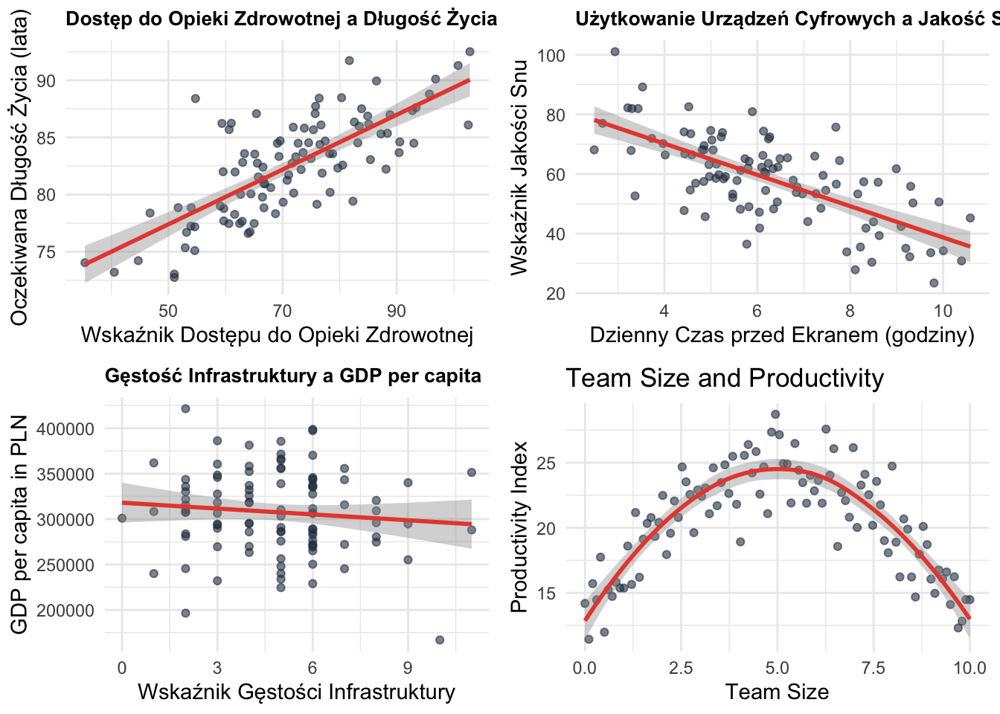
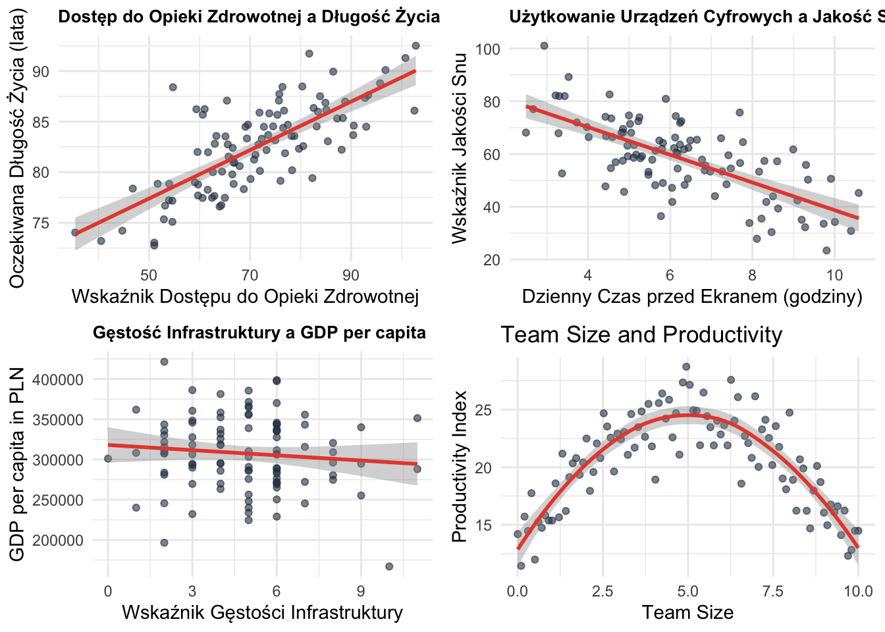
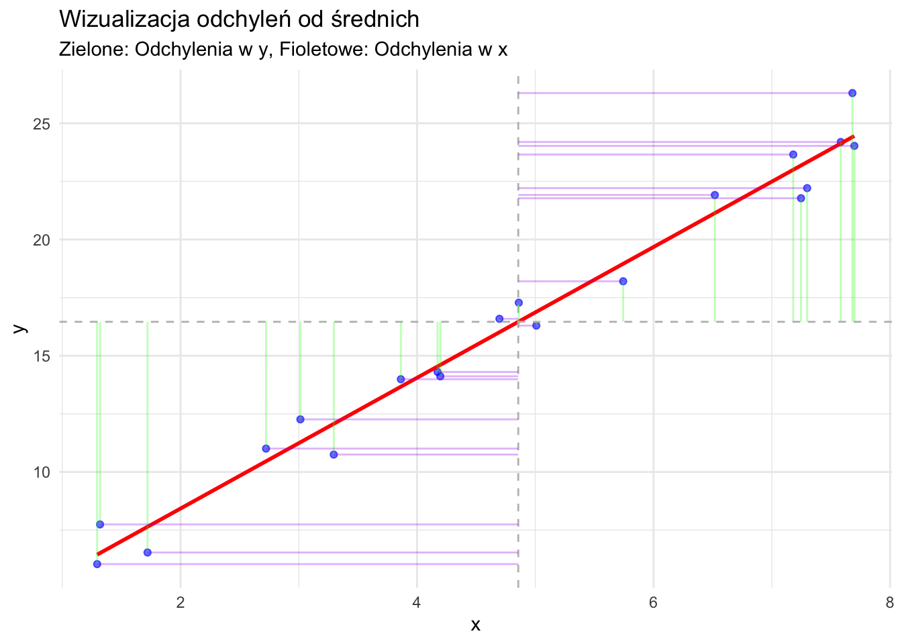
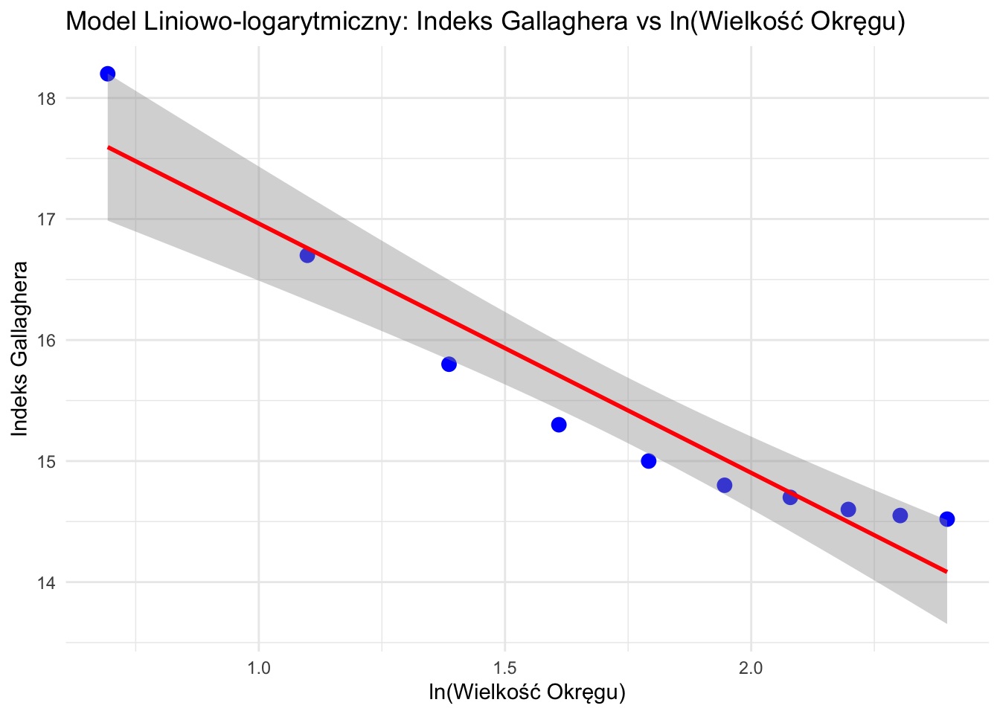

Statystyki dwuwymiarowe opisują związek między dwiema zmiennymi. Omówimy kilka miar, zaczynając od kowariancji i przechodząc do bardziej zaawansowanych miar korelacji.
Imagine you’re observing how different aspects of society move together. Sometimes when one thing increases, another increases too. Other times, they move in opposite directions. And sometimes, they move in more complex patterns!
Let’s explore some examples that show different ways variables can relate to each other:

Let’s break down what we’re seeing:
Remember:
To, że dwa zjawiska występują razem, nie oznacza, że jedno powoduje drugie. Przyjrzyjmy się fascynującym przykładom “korelacji pozornych” - gdy zmienne wydają się być powiązane, ale w rzeczywistości nie ma między nimi związku przyczynowego.

Co tu się dzieje?
Co tu się dzieje?
Trzy częste pułapki w interpretacji korelacji:
✅ Zawsze pytaj:
❌ Nie daj się zwieść:
Pamiętaj: W naukach społecznych większość relacji jest złożona i obejmuje wiele czynników. Korelacja to tylko jeden element układanki!
Kowariancja mierzy, jak dwie zmienne zmieniają się razem.
Wzór: cov(X,Y) = \frac{\sum_{i=1}^n (x_i - \bar{x})(y_i - \bar{y})}{n - 1}
Przykład Ręcznego Obliczenia:
Obliczmy kowariancję dla dwóch zmiennych:
| Krok | Opis | Obliczenie |
|---|---|---|
| 1 | Oblicz średnie | \bar{x} = 3, \bar{y} = 4 |
| 2 | Oblicz (x_i - \bar{x})(y_i - \bar{y}) dla każdej pary | (-2)(-2) = 4 |
| (-1)(0) = 0 | ||
| (0)(1) = 0 | ||
| (1)(0) = 0 | ||
| (2)(1) = 2 | ||
| 3 | Zsumuj wyniki | 4 + 0 + 0 + 0 + 2 = 6 |
| 4 | Podziel przez (n-1) | 6 / 4 = 1,5 |
Obliczenie w R:
x <- c(1, 2, 3, 4, 5)
y <- c(2, 4, 5, 4, 5)
cov(x, y)[1] 1.5Interpretacja: - Dodatnia kowariancja (1,5) wskazuje, że x i y mają tendencję do wzrostu razem.
Zalety:
Wady:
Korelacja Pearsona mierzy siłę i kierunek liniowego związku między dwiema zmiennymi ciągłymi.
Wzór: r = \frac{cov(X,Y)}{s_X s_Y} = \frac{\sum (x_i - \bar{x})(y_i - \bar{y})}{\sqrt{\sum (x_i - \bar{x})^2 \sum (y_i - \bar{y})^2}}
Przykład Ręcznego Obliczenia:
Używając tych samych danych co wyżej:
| Krok | Opis | Obliczenie |
|---|---|---|
| 1 | Oblicz kowariancję | (Z poprzedniego obliczenia) 1,5 |
| 2 | Oblicz odchylenia standardowe | s_X = \sqrt{\frac{10}{4}} = 1,58, s_Y = \sqrt{\frac{6}{4}} = 1,22 |
| 3 | Podziel kowariancję przez iloczyn odchyleń standardowych | 1,5 / (1,58 * 1,22) = 0,7746 |
Obliczenie w R:
cor(x, y, method = "pearson")[1] 0.7745967Interpretacja: - Współczynnik korelacji 0,7746 wskazuje na silny dodatni związek liniowy między x i y.
Zalety:
Wady:
Korelacja Spearmana mierzy siłę i kierunek monotonicznego związku między dwiema zmiennymi, które mogą być ciągłe lub porządkowe.
Wzór: \rho = 1 - \frac{6 \sum d_i^2}{n(n^2 - 1)}, gdzie d_i to różnica między rangami.
Przykład Ręcznego Obliczenia:
Użyjmy nieco innych danych:
| Krok | Opis | Obliczenie |
|---|---|---|
| 1 | Przypisz rangi obu zmiennym | x_ranga: 1, 2, 3, 4, 5 |
| y_ranga: 1, 3, 2, 5, 4 | ||
| 2 | Oblicz różnice w rangach (d) | 0, -1, 1, -1, 1 |
| 3 | Podnieś różnice do kwadratu | 0, 1, 1, 1, 1 |
| 4 | Zsumuj kwadraty różnic | \sum d_i^2 = 4 |
| 5 | Zastosuj wzór | \rho = 1 - \frac{6(4)}{5(5^2 - 1)} = 0,8 |
Obliczenie w R:
x <- c(1, 2, 3, 4, 5)
y <- c(1, 3, 2, 5, 4)
cor(x, y, method = "spearman")[1] 0.8Interpretacja: - Korelacja Spearmana 0,8 wskazuje na silny dodatni związek monotoniczny między x i y.
Zalety:
Wady:
Tabela krzyżowa (tabela kontyngencji) pokazuje związek między dwiema zmiennymi kategorycznymi.
Przykład:
Stwórzmy tabelę krzyżową dla dwóch zmiennych: - Poziom wykształcenia: Średnie, Wyższe, Podyplomowe - Status zatrudnienia: Zatrudniony, Bezrobotny
wyksztalcenie <- factor(c("Średnie", "Wyższe", "Podyplomowe", "Średnie", "Wyższe", "Podyplomowe", "Średnie", "Wyższe", "Podyplomowe"))
zatrudnienie <- factor(c("Zatrudniony", "Zatrudniony", "Zatrudniony", "Bezrobotny", "Zatrudniony", "Zatrudniony", "Bezrobotny", "Bezrobotny", "Zatrudniony"))
table(wyksztalcenie, zatrudnienie) zatrudnienie
wyksztalcenie Bezrobotny Zatrudniony
Podyplomowe 0 3
Średnie 2 1
Wyższe 1 2Interpretacja:
Zalety:
Wady:
Przy wyborze statystyki dwuwymiarowej należy wziąć pod uwagę:
Typ danych:
Typ związku:
Obecność wartości odstających:
Rozkład:
Wielkość próby:
Pamiętaj, że często wartościowe jest użycie wielu miar i wizualizacji (takich jak wykresy rozrzutu), aby uzyskać kompleksowe zrozumienie związku między zmiennymi.
Miary korelacji określają siłę i kierunek zależności między zmiennymi. Omówimy trzy kluczowe współczynniki korelacji:
Współczynnik korelacji Pearsona mierzy zależność liniową między dwiema zmiennymi ciągłymi.
r = \frac{\sum_{i=1}^{n} (x_i - \bar{x})(y_i - \bar{y})}{\sqrt{\sum_{i=1}^{n} (x_i - \bar{x})^2 \sum_{i=1}^{n} (y_i - \bar{y})^2}}
gdzie:
Współczynnik ρ Spearmana ocenia zależności monotoniczne wykorzystując rangi.
\rho = 1 - \frac{6\sum d_i^2}{n(n^2-1)}
gdzie:
Tau Kendalla mierzy związek porządkowy na podstawie par zgodnych i niezgodnych.
\tau = \frac{2(P - Q)}{n(n-1)}
gdzie:
# Przykładowe dane
set.seed(123)
x <- c(2, 4, 5, 3, 8)
y <- c(3, 5, 4, 4, 7)
dane <- data.frame(x = x, y = y)
# Obliczanie korelacji
korelacja_pearson <- cor(x, y, method = "pearson")
korelacja_spearman <- cor(x, y, method = "spearman")
korelacja_kendall <- cor(x, y, method = "kendall")
# Wyświetlenie wyników
cat("Korelacja Pearsona:", round(korelacja_pearson, 3), "\n")Korelacja Pearsona: 0.917 cat("Korelacja Spearmana:", round(korelacja_spearman, 3), "\n")Korelacja Spearmana: 0.821 cat("Korelacja Kendalla:", round(korelacja_kendall, 3), "\n")Korelacja Kendalla: 0.738 library(ggplot2)
ggplot(dane, aes(x = x, y = y)) +
geom_point() +
geom_smooth(method = "lm", se = FALSE, color = "blue") +
labs(title = "Przykład Korelacji",
subtitle = paste("Korelacja Pearsona r =", round(korelacja_pearson, 3)),
x = "Zmienna X",
y = "Zmienna Y") +
theme_minimal()`geom_smooth()` using formula = 'y ~ x'
Zakres: [-1, 1]
Właściwości:
Zakres: [-1, 1]
Właściwości:
Zakres: [-1, 1]
Właściwości:
Stosuj Pearsona gdy:
Stosuj Spearmana gdy:
Stosuj Kendalla gdy:
# Generowanie nieliniowej zależności
set.seed(456)
x2 <- seq(1, 10, length.out = 20)
y2 <- x2^2 + rnorm(20, 0, 5)
dane2 <- data.frame(x = x2, y = y2)
# Obliczanie korelacji
wyniki_korelacji <- data.frame(
Metoda = c("Pearson", "Spearman", "Kendall"),
Korelacja = c(
cor(x2, y2, method = "pearson"),
cor(x2, y2, method = "spearman"),
cor(x2, y2, method = "kendall")
)
)
print(wyniki_korelacji) Metoda Korelacja
1 Pearson 0.9699718
2 Spearman 0.9849624
3 Kendall 0.9368421# Wizualizacja
ggplot(dane2, aes(x = x, y = y)) +
geom_point() +
geom_smooth(method = "loess", se = FALSE) +
labs(title = "Przykład Zależności Nieliniowej",
subtitle = "Porównanie różnych miar korelacji",
x = "Zmienna X",
y = "Zmienna Y") +
theme_minimal()`geom_smooth()` using formula = 'y ~ x'Statystyki wielowymiarowe obejmują analizę związków między trzema lub więcej zmiennymi jednocześnie. Ta sekcja wprowadzi niektóre podstawowe koncepcje i techniki analizy wielowymiarowej, koncentrując się na metodach opartych na korelacji.
Macierz korelacji to tabela pokazująca korelacje parami dla kilku zmiennych. Jest to podstawowe narzędzie w analizie wielowymiarowej.
Przykład: Stwórzmy macierz korelacji dla czterech zmiennych: wzrost, waga, wiek i dochód.
set.seed(123) # Dla powtarzalności
wzrost <- rnorm(100, 170, 10)
waga <- wzrost * 0.5 + rnorm(100, 0, 5)
wiek <- rnorm(100, 40, 10)
dochod <- wiek * 1000 + rnorm(100, 0, 10000)
dane <- data.frame(wzrost, waga, wiek, dochod)
macierz_kor <- cor(dane)
print(macierz_kor) wzrost waga wiek dochod
wzrost 1.0000000 0.66712996 -0.12917601 -0.12246786
waga 0.6671300 1.00000000 -0.06814187 -0.04579492
wiek -0.1291760 -0.06814187 1.00000000 0.65654902
dochod -0.1224679 -0.04579492 0.65654902 1.00000000Interpretacja: - Każda komórka pokazuje korelację między dwiema zmiennymi. - Przekątna zawsze wynosi 1 (korelacja zmiennej z samą sobą). - Szukaj silnych korelacji (bliskich 1 lub -1), aby zidentyfikować potencjalne związki.
Macierz wykresów rozrzutu pokazuje parami związki między wieloma zmiennymi.
pairs(dane)
Interpretacja:
Wykres korelacji zapewnia wizualną reprezentację macierzy korelacji.
library(corrplot)corrplot 0.94 loadedcorrplot(macierz_kor, method = "color")
Interpretacja:
Korelacja cząstkowa mierzy związek między dwiema zmiennymi przy kontrolowaniu jednej lub więcej innych zmiennych.
Przykład: Obliczmy korelację cząstkową między wzrostem a wagą, kontrolując wiek.
library(ppcor)
pcor.test(dane$wzrost, dane$waga, dane$wiek) estimate p.value statistic n gp Method
1 0.6654367 5.758157e-14 8.779896 100 1 pearsonInterpretacja:
Korelacja wielokrotna mierzy siłę związku między zmienną zależną a wieloma zmiennymi niezależnymi.
Przykład: Przewidźmy wagę na podstawie wzrostu i wieku.
model <- lm(waga ~ wzrost + wiek, data = dane)
R <- sqrt(summary(model)$r.squared)
print(paste("Współczynnik korelacji wielokrotnej:", R))[1] "Współczynnik korelacji wielokrotnej: 0.667377840470434"Interpretacja:
Analiza czynnikowa to technika używana do zredukowania wielu zmiennych do mniejszej liczby czynników leżących u podstaw.
Przykład: Wykonajmy prostą analizę czynnikową na naszym zbiorze danych.
library(psych)
Attaching package: 'psych'The following objects are masked from 'package:ggplot2':
%+%, alphawynik_fa <- fa(dane, nfactors = 2, rotate = "varimax")
print(wynik_fa$loadings, cutoff = 0.3)
Loadings:
MR2 MR1
wzrost 0.798
waga 0.836
wiek 0.729
dochod 0.895
MR2 MR1
SS loadings 1.344 1.341
Proportion Var 0.336 0.335
Cumulative Var 0.336 0.671Interpretacja:
Wielkość próby: Techniki wielowymiarowe często wymagają większych prób dla stabilnych wyników.
Współliniowość: Wysokie korelacje między zmiennymi niezależnymi mogą powodować problemy w niektórych analizach.
Wartości odstające: Wielowymiarowe wartości odstające mogą mieć silny wpływ na wyniki.
Założenia: Wiele technik zakłada wielowymiarową normalność i liniowe związki.
Złożoność interpretacji: Wraz ze wzrostem liczby zmiennych interpretacja może stać się bardziej wyzwająca.
To wprowadzenie do statystyki wielowymiarowej opiera się na koncepcji korelacji, aby badać związki między wieloma zmiennymi. Techniki te zapewniają potężne narzędzia do zrozumienia złożonych zbiorów danych, ale wymagają również starannego rozważenia założeń i ograniczeń. W miarę postępu w Twojej podróży statystycznej napotkasz bardziej zaawansowane techniki wielowymiarowe, takie jak MANOVA, analiza dyskryminacyjna i modelowanie równań strukturalnych.
library(tidyverse)── Attaching core tidyverse packages ──────────────────────── tidyverse 2.0.0 ──
✔ forcats 1.0.0 ✔ readr 2.1.5
✔ lubridate 1.9.3 ✔ stringr 1.5.1
✔ purrr 1.0.2 ✔ tibble 3.2.1
── Conflicts ────────────────────────────────────────── tidyverse_conflicts() ──
✖ psych::%+%() masks ggplot2::%+%()
✖ psych::alpha() masks ggplot2::alpha()
✖ dplyr::filter() masks stats::filter()
✖ dplyr::lag() masks stats::lag()
✖ MASS::select() masks dplyr::select()
ℹ Use the conflicted package (<http://conflicted.r-lib.org/>) to force all conflicts to become errorslibrary(ggplot2)
library(broom)
library(gridExtra)
Attaching package: 'gridExtra'
The following object is masked from 'package:dplyr':
combineAnaliza regresji jest fundamentalnym narzędziem statystycznym, które pomaga nam zrozumieć relacje między zmiennymi. Zanim zagłębimy się w formuły i szczegóły techniczne, zrozummy, na jakie pytania może odpowiedzieć regresja:
Te pytania mają wspólną strukturę: wszystkie badają, jak zmiany jednej zmiennej wiążą się ze zmianami innej.
Zanim zagłębimy się w matematykę, ustalmy kluczowe terminy:
Zobaczmy na przykładzie, co robi regresja:
# Generate some example data
set.seed(123)
x <- seq(1, 10, by = 0.5)
y <- 2 + 3*x + rnorm(length(x), 0, 2)
data <- data.frame(x = x, y = y)
# Fit the model
model <- lm(y ~ x, data = data)
# Create the plot
ggplot(data, aes(x = x, y = y)) +
geom_point(color = "blue", alpha = 0.6) +
geom_smooth(method = "lm", se = TRUE, color = "red") +
theme_minimal() +
labs(title = "Przykład Prostej Regresji Liniowej",
subtitle = "Punkty reprezentują dane, czerwona linia pokazuje dopasowanie regresji",
x = "Zmienna Niezależna (X)",
y = "Zmienna Zależna (Y)") +
theme(plot.title = element_text(face = "bold"))`geom_smooth()` using formula = 'y ~ x'Ten wykres pokazuje istotę regresji: - Każdy punkt reprezentuje obserwację (X, Y) - Linia reprezentuje nasze najlepsze przypuszczenie dotyczące zależności - Rozproszenie punktów wokół linii pokazuje niepewność
W teorii istnieje prawdziwa zależność populacyjna:
Y = \beta_0 + \beta_1X + \varepsilon
gdzie:
W praktyce pracujemy z danymi próby, aby oszacować tę zależność:
\hat{Y} = \hat{\beta}_0 + \hat{\beta}_1X
Zobaczmy wizualizację różnicy między zależnościami populacyjnymi a próbkowymi:
# Generate population data
set.seed(456)
x_pop <- seq(1, 10, by = 0.1)
true_relationship <- 2 + 3*x_pop # True β₀=2, β₁=3
y_pop <- true_relationship + rnorm(length(x_pop), 0, 2)
# Create several samples
sample_size <- 30
samples <- data.frame(
x = rep(sample(x_pop, sample_size), 3),
sample = rep(1:3, each = sample_size)
)
samples$y <- 2 + 3*samples$x + rnorm(nrow(samples), 0, 2)
# Fit models to each sample
models <- samples %>%
group_by(sample) %>%
summarise(
intercept = coef(lm(y ~ x))[1],
slope = coef(lm(y ~ x))[2]
)
# Plot
ggplot() +
geom_point(data = samples, aes(x = x, y = y, color = factor(sample)),
alpha = 0.5) +
geom_abline(data = models,
aes(intercept = intercept, slope = slope,
color = factor(sample)),
linetype = "dashed") +
geom_line(aes(x = x_pop, y = true_relationship),
color = "black", size = 1) +
theme_minimal() +
labs(title = "Linie Regresji: Populacyjna vs. Próbkowe",
subtitle = "Czarna linia: prawdziwa zależność populacyjna\nLinie przerywane: oszacowania próbkowe",
x = "X", y = "Y",
color = "Próba") +
theme(legend.position = "bottom")Warning: Using `size` aesthetic for lines was deprecated in ggplot2 3.4.0.
ℹ Please use `linewidth` instead.Ta wizualizacja pokazuje: - Prawdziwą linię populacyjną (czarną), którą próbujemy odkryć - Różne oszacowania próbkowe (linie przerywane) oparte na różnych próbach - Jak oszacowania próbkowe różnią się wokół prawdziwej zależności
Najważniejszym założeniem w regresji jest ścisła egzogeniczność:
E[\varepsilon|X] = 0
Oznacza to:
Zobaczmy wizualizację sytuacji, gdy to założenie jest spełnione i gdy nie jest:
# Generate data
set.seed(789)
x <- seq(1, 10, by = 0.2)
# Case 1: Exogenous errors
y_exog <- 2 + 3*x + rnorm(length(x), 0, 2)
# Case 2: Non-exogenous errors (error variance increases with x)
y_nonexog <- 2 + 3*x + 0.5*x*rnorm(length(x), 0, 2)
# Create datasets
data_exog <- data.frame(
x = x,
y = y_exog,
type = "Błędy Egzogeniczne\n(Założenie Spełnione)"
)
data_nonexog <- data.frame(
x = x,
y = y_nonexog,
type = "Błędy Nieegzogeniczne\n(Założenie Niespełnione)"
)
data_combined <- rbind(data_exog, data_nonexog)
# Create plots with residuals
plot_residuals <- function(data, title) {
model <- lm(y ~ x, data = data)
data$predicted <- predict(model)
data$residuals <- residuals(model)
p1 <- ggplot(data, aes(x = x, y = y)) +
geom_point() +
geom_smooth(method = "lm", se = FALSE, color = "red") +
theme_minimal() +
labs(title = title)
p2 <- ggplot(data, aes(x = x, y = residuals)) +
geom_point() +
geom_hline(yintercept = 0, linetype = "dashed", color = "red") +
theme_minimal() +
labs(y = "Reszty")
list(p1, p2)
}
# Generate plots
plots_exog <- plot_residuals(data_exog, "Błędy Egzogeniczne")
plots_nonexog <- plot_residuals(data_nonexog, "Błędy Nieegzogeniczne")
# Arrange plots
gridExtra::grid.arrange(
plots_exog[[1]], plots_exog[[2]],
plots_nonexog[[1]], plots_nonexog[[2]],
ncol = 2
)`geom_smooth()` using formula = 'y ~ x'
`geom_smooth()` using formula = 'y ~ x'Zależność między X a Y powinna być liniowa w parametrach:
E[Y|X] = \beta_0 + \beta_1X
Zauważ, że nie oznacza to, że X i Y muszą mieć zależność w postaci linii prostej - możemy transformować zmienne. Zobaczmy różne rodzaje zależności:
# Generate data
set.seed(101)
x <- seq(1, 10, by = 0.1)
# Different relationships
data_relationships <- data.frame(
x = rep(x, 3),
y = c(
# Linear
2 + 3*x + rnorm(length(x), 0, 2),
# Quadratic
2 + 0.5*x^2 + rnorm(length(x), 0, 2),
# Exponential
exp(0.3*x) + rnorm(length(x), 0, 2)
),
type = rep(c("Liniowa", "Kwadratowa", "Wykładnicza"), each = length(x))
)
# Plot
ggplot(data_relationships, aes(x = x, y = y)) +
geom_point(alpha = 0.5) +
geom_smooth(method = "lm", se = FALSE, color = "red") +
geom_smooth(se = FALSE, color = "blue") +
facet_wrap(~type, scales = "free_y") +
theme_minimal() +
labs(subtitle = "Czerwona: dopasowanie liniowe, Niebieska: prawdziwa zależność")`geom_smooth()` using formula = 'y ~ x'
`geom_smooth()` using method = 'loess' and formula = 'y ~ x'Gdy założenie liniowości jest naruszone:
# Generate exponential data
set.seed(102)
x <- seq(1, 10, by = 0.2)
y <- exp(0.3*x) + rnorm(length(x), 0, 2)
# Create datasets
data_trans <- data.frame(
x = x,
y = y,
log_y = log(y)
)Warning in log(y): NaNs produced# Original scale plot
p1 <- ggplot(data_trans, aes(x = x, y = y)) +
geom_point() +
geom_smooth(method = "lm", se = FALSE, color = "red") +
theme_minimal() +
labs(title = "Skala Oryginalna")
# Log scale plot
p2 <- ggplot(data_trans, aes(x = x, y = log_y)) +
geom_point() +
geom_smooth(method = "lm", se = FALSE, color = "red") +
theme_minimal() +
labs(title = "Y po Transformacji Logarytmicznej")
gridExtra::grid.arrange(p1, p2, ncol = 2)`geom_smooth()` using formula = 'y ~ x'
`geom_smooth()` using formula = 'y ~ x'Warning: Removed 1 row containing non-finite outside the scale range
(`stat_smooth()`).Warning: Removed 1 row containing missing values or values outside the scale range
(`geom_point()`).OLS znajduje \hat{\beta}_0 i \hat{\beta}_1 minimalizując sumę kwadratów reszt:
\min_{\hat{\beta}_0, \hat{\beta}_1} \sum_{i=1}^n (Y_i - \hat{\beta}_0 - \hat{\beta}_1X_i)^2
Rozwiązania to:
\hat{\beta}_1 = \frac{\sum_{i=1}^n (X_i - \bar{X})(Y_i - \bar{Y})}{\sum_{i=1}^n (X_i - \bar{X})^2}
\hat{\beta}_0 = \bar{Y} - \hat{\beta}_1\bar{X}
Zobaczmy wizualizację działania OLS:
# Generate sample data
set.seed(103)
x_sample <- seq(1, 10, by = 1)
y_sample <- 2 + 3*x_sample + rnorm(length(x_sample), 0, 2)
data_sample <- data.frame(x = x_sample, y = y_sample)
# Fit model
model_sample <- lm(y ~ x, data = data_sample)
data_sample$predicted <- predict(model_sample)
# Plot
ggplot(data_sample, aes(x = x, y = y)) +
geom_point(color = "blue") +
geom_line(aes(y = predicted), color = "red") +
geom_segment(aes(xend = x, y = y, yend = predicted),
color = "green", linetype = "dashed") +
theme_minimal() +
labs(title = "Regresja OLS z Resztami",
subtitle = "Niebieskie punkty: dane\nCzerwona linia: dopasowanie OLS\nZielone linie przerywane: reszty")
Całkowita zmienność Y może być rozłożona na komponenty wyjaśnione i niewyjaśnione:
\underbrace{\sum_{i=1}^n (Y_i - \bar{Y})^2}_{SST} = \underbrace{\sum_{i=1}^n (\hat{Y}_i - \bar{Y})^2}_{SSR} + \underbrace{\sum_{i=1}^n (Y_i - \hat{Y}_i)^2}_{SSE}
gdzie:
Zobaczmy wizualizację tej dekompozycji:
# Generate sample data
set.seed(104)
x <- seq(1, 10, by = 0.5)
y <- 2 + 3*x + rnorm(length(x), 0, 2)
df <- data.frame(x = x, y = y)
# Fit model
model <- lm(y ~ x, data = df)
df$predicted <- predict(model)
df$residuals <- residuals(model)
df$mean_y <- mean(df$y)
# Calculate components for one point
point_index <- 10
example_point <- df[point_index, ]
# Create main plot
p_main <- ggplot(df, aes(x = x)) +
geom_point(aes(y = y), color = "blue") +
geom_line(aes(y = predicted), color = "red") +
geom_hline(yintercept = mean(df$y), linetype = "dashed") +
# Total deviation
geom_segment(data = example_point,
aes(x = x, y = mean_y, xend = x, yend = y),
color = "purple", size = 1, alpha = 0.5) +
# Explained deviation
geom_segment(data = example_point,
aes(x = x, y = mean_y, xend = x, yend = predicted),
color = "green", size = 1, alpha = 0.5) +
# Unexplained deviation
geom_segment(data = example_point,
aes(x = x, y = predicted, xend = x, yend = y),
color = "orange", size = 1, alpha = 0.5) +
theme_minimal() +
labs(title = "Dekompozycja Wariancji",
subtitle = "Fioletowy: Całkowite odchylenie (Yi - Ȳ)\nZielony: Wyjaśnione (Ŷi - Ȳ)\nPomarańczowy: Niewyjaśnione (Yi - Ŷi)")
# Calculate R-squared
summary_stats <- glance(model)
r2 <- round(summary_stats$r.squared, 3)
# Add R-squared to plot
print(p_main)
cat(sprintf("\nR² = %.3f\nOznacza to, że %.1f%% wariancji w Y jest wyjaśnione przez X\n", r2, r2*100))
R² = 0.965
Oznacza to, że 96.5% wariancji w Y jest wyjaśnione przez X
R-kwadrat (R^2): R^2 = \frac{SSR}{SST} = 1 - \frac{SSE}{SST}
Pierwiastek Błędu Średniokwadratowego (RMSE): RMSE = \sqrt{\frac{SSE}{n}}
Średni Błąd Bezwzględny (MAE): MAE = \frac{1}{n}\sum_{i=1}^n |Y_i - \hat{Y}_i|
Zobaczmy obliczenie i wizualizację tych miar:
# Calculate measures
rmse <- sqrt(mean(residuals(model)^2))
mae <- mean(abs(residuals(model)))
# Create residual plot with different measures
ggplot(df, aes(x = predicted, y = residuals)) +
geom_point() +
geom_hline(yintercept = 0, linetype = "dashed", color = "red") +
geom_hline(yintercept = c(rmse, -rmse), linetype = "dotted", color = "blue") +
geom_hline(yintercept = c(mae, -mae), linetype = "dotted", color = "green") +
theme_minimal() +
labs(title = "Wykres Reszt z Miarami Błędu",
subtitle = sprintf("RMSE = %.2f (niebieskie linie)\nMAE = %.2f (zielone linie)",
rmse, mae))
Cztery kluczowe wykresy diagnostyczne:
# Create diagnostic plots
par(mfrow = c(2, 2))
plot(model)
Interpretacja każdego wykresu:
Zacznijmy od rzeczywistego scenariusza: chcemy zrozumieć, jak czas nauki wpływa na wyniki egzaminu. Zbieramy dane z Twojej klasy, gdzie:
Naszym celem jest znalezienie prostej, która najlepiej opisuje tę zależność. Próbujemy oszacować prawdziwą zależność (której nigdy nie znamy dokładnie) używając naszej próby danych. Przeanalizujmy to krok po kroku.
library(tidyverse)
# Tworzenie przykładowych danych
set.seed(123)
godziny_nauki <- runif(20, 1, 8)
wyniki_egzaminu <- 60 + 5 * godziny_nauki + rnorm(20, 0, 5)
dane <- data.frame(godziny_nauki, wyniki_egzaminu)
# Podstawowy wykres punktowy
ggplot(dane, aes(x = godziny_nauki, y = wyniki_egzaminu)) +
geom_point(color = "blue", size = 3, alpha = 0.6) +
labs(x = "Godziny nauki", y = "Wyniki egzaminu",
title = "Dane z Twojej klasy: Godziny nauki vs. Wyniki egzaminu") +
theme_minimal() +
theme(text = element_text(size = 12))
Każdą prostą można zapisać w postaci:
y = \hat{\beta}_0 + \hat{\beta}_1x
Gdzie:
Spójrzmy na trzy możliwe proste przechodzące przez nasze dane:
ggplot(dane, aes(x = godziny_nauki, y = wyniki_egzaminu)) +
geom_point(color = "blue", size = 3, alpha = 0.6) +
geom_abline(intercept = 50, slope = 8, color = "red", linetype = "dashed", size = 1) +
geom_abline(intercept = 70, slope = 2, color = "green", linetype = "dashed", size = 1) +
geom_smooth(method = "lm", se = FALSE, color = "purple") +
labs(x = "Godziny nauki", y = "Wyniki egzaminu",
title = "Trzy różne proste: Która jest najlepsza?") +
annotate("text", x = 7.5, y = 120, color = "red", label = "Prosta A: Za stroma") +
annotate("text", x = 7.5, y = 85, color = "green", label = "Prosta B: Za płaska") +
annotate("text", x = 7.5, y = 100, color = "purple", label = "Prosta C: W sam raz") +
theme_minimal() +
theme(text = element_text(size = 12))`geom_smooth()` using formula = 'y ~ x'
Tu zaczyna się magia MNK. Dla każdego studenta w naszych danych:
\text{reszta}_i = y_i - \hat{y}_i = y_i - (\hat{\beta}_0 + \hat{\beta}_1x_i)
Zobaczmy wizualizację tych reszt dla jednej prostej:
# Dopasowanie modelu i pokazanie reszt
model <- lm(wyniki_egzaminu ~ godziny_nauki, data = dane)
ggplot(dane, aes(x = godziny_nauki, y = wyniki_egzaminu)) +
geom_point(color = "blue", size = 3, alpha = 0.6) +
geom_smooth(method = "lm", se = FALSE, color = "purple") +
geom_segment(aes(xend = godziny_nauki,
yend = predict(model, dane)),
color = "orange", alpha = 0.5) +
labs(x = "Godziny nauki", y = "Wyniki egzaminu",
title = "Zrozumienie reszt: Różnice między przewidywaniami a rzeczywistością") +
theme_minimal() +
theme(text = element_text(size = 12))`geom_smooth()` using formula = 'y ~ x'
Pomarańczowe pionowe linie pokazują, jak bardzo nasze przewidywania odbiegają od rzeczywistości dla każdego studenta. Niektóre przewidywania są za wysokie (dodatnie reszty), inne za niskie (ujemne reszty).
To kluczowa koncepcja! Przeanalizujmy to na prostym przykładzie:
Wyobraź sobie, że mamy tylko dwóch studentów: 1. Ala: Przewidywane 80, rzeczywisty wynik 85 (reszta = +5) 2. Bob: Przewidywane 90, rzeczywisty wynik 85 (reszta = -5)
Jeśli po prostu dodamy te reszty: (+5) + (-5) = 0
To sugerowałoby, że nasza prosta jest idealna (całkowity błąd = 0), ale wiemy, że tak nie jest! Oba przewidywania były nietrafne o 5 punktów.
Rozwiązanie: Podnosimy reszty do kwadratu przed dodaniem: - Kwadrat reszty Ali: (+5)^2 = 25 - Kwadrat reszty Boba: (-5)^2 = 25 - Całkowity błąd kwadratowy: 25 + 25 = 50
To daje nam znacznie lepszą miarę tego, jak bardzo nasze przewidywania są błędne!
Dla wszystkich studentów razem obliczamy:
SKR = \sum_{i=1}^n (y_i - (\hat{\beta}_0 + \hat{\beta}_1x_i))^2
Ten wzór może wyglądać groźnie, ale oznacza po prostu:
Im mniejsza ta suma, tym lepiej nasza prosta pasuje do danych!
# Porównanie dobrego i złego dopasowania
zle_przewidywania <- 70 + 2 * dane$godziny_nauki
dobre_przewidywania <- predict(model, dane)
zle_sse <- sum((dane$wyniki_egzaminu - zle_przewidywania)^2)
dobre_sse <- sum((dane$wyniki_egzaminu - dobre_przewidywania)^2)
ggplot(dane, aes(x = godziny_nauki, y = wyniki_egzaminu)) +
geom_point(color = "blue", size = 3, alpha = 0.6) +
geom_abline(intercept = 70, slope = 2, color = "red",
linetype = "dashed") +
geom_smooth(method = "lm", se = FALSE, color = "purple") +
annotate("text", x = 2, y = 95,
label = paste("Czerwona prosta: Błąd =", round(zle_sse)),
color = "red") +
annotate("text", x = 2, y = 90,
label = paste("Fioletowa prosta: Błąd =", round(dobre_sse)),
color = "purple") +
labs(x = "Godziny nauki", y = "Wyniki egzaminu",
title = "Porównanie całkowitych błędów przewidywania") +
theme_minimal() +
theme(text = element_text(size = 12))`geom_smooth()` using formula = 'y ~ x'
Przeanalizujmy nazwę:
Prosta MNK ma kilka przyjemnych właściwości:
Eksperymentuj z różnymi prostymi i zobacz, jak zmienia się całkowity błąd kwadratowy:
library(manipulate)
manipulate(
{
przewidywania <- b0 + b1 * dane$godziny_nauki
skr <- sum((dane$wyniki_egzaminu - przewidywania)^2)
ggplot(dane, aes(x = godziny_nauki, y = wyniki_egzaminu)) +
geom_point(color = "blue", alpha = 0.6) +
geom_abline(slope = b1, intercept = b0, color = "red") +
labs(title = paste("Całkowity błąd kwadratowy =", round(skr, 1))) +
theme_minimal()
},
b0 = slider(40, 80, initial = 60, label = "Wyraz wolny (β̂₀)"),
b1 = slider(0, 10, initial = 5, label = "Nachylenie (β̂₁)")
)Czy potrafisz znaleźć prostą, która daje najmniejszą sumę kwadratów reszt? To właśnie prosta MNK!
Oznaczenie z daszkiem (\hat{\beta}_0, \hat{\beta}_1) przypomina nam, że estymujemy prawdziwą zależność z naszej próby. Nigdy nie znamy prawdziwych \beta_0 i \beta_1 - możemy je tylko oszacować z naszych danych.
MNK daje nam najlepsze możliwe estymaty, gdy spełnione są pewne warunki (jak losowo pobrana próba i rzeczywiście liniowa zależność).
Powyższe narzędzie interaktywne pomaga zrozumieć to, co MNK robi automatycznie: znajduje wartości \hat{\beta}_0 i \hat{\beta}_1, które dają nam najmniejszą możliwą sumę kwadratów reszt.
Chcemy znaleźć prostą y = \hat{\beta}_0 + \hat{\beta}_1x, która minimalizuje sumę kwadratów reszt. Wyprowadźmy to krok po kroku:
Najpierw zapisujemy funkcję, którą chcemy zminimalizować:
SKR = \sum_{i=1}^n (y_i - (\hat{\beta}_0 + \hat{\beta}_1x_i))^2
Aby znaleźć minimum, musimy obliczyć pochodne cząstkowe względem \hat{\beta}_0 i \hat{\beta}_1 oraz przyrównać je do zera:
\frac{\partial SKR}{\partial \hat{\beta}_0} = 0 oraz \frac{\partial SKR}{\partial \hat{\beta}_1} = 0
Obliczmy pochodną cząstkową względem \hat{\beta}_0:
\frac{\partial SKR}{\partial \hat{\beta}_0} = \frac{\partial}{\partial \hat{\beta}_0} \sum_{i=1}^n (y_i - \hat{\beta}_0 - \hat{\beta}_1x_i)^2
Korzystając z reguły łańcuchowej:
\frac{\partial SKR}{\partial \hat{\beta}_0} = \sum_{i=1}^n 2(y_i - \hat{\beta}_0 - \hat{\beta}_1x_i)(-1) = 0
Upraszczając:
-2\sum_{i=1}^n (y_i - \hat{\beta}_0 - \hat{\beta}_1x_i) = 0
\sum_{i=1}^n y_i - n\hat{\beta}_0 - \hat{\beta}_1\sum_{i=1}^n x_i = 0
Rozwiązując względem \hat{\beta}_0:
\hat{\beta}_0 = \frac{\sum_{i=1}^n y_i}{n} - \hat{\beta}_1\frac{\sum_{i=1}^n x_i}{n} = \bar{y} - \hat{\beta}_1\bar{x}
Gdzie \bar{y} i \bar{x} to średnie z próby.
Teraz obliczamy pochodną cząstkową względem \hat{\beta}_1:
\frac{\partial SKR}{\partial \hat{\beta}_1} = \frac{\partial}{\partial \hat{\beta}_1} \sum_{i=1}^n (y_i - \hat{\beta}_0 - \hat{\beta}_1x_i)^2
Korzystając z reguły łańcuchowej:
\frac{\partial SKR}{\partial \hat{\beta}_1} = \sum_{i=1}^n 2(y_i - \hat{\beta}_0 - \hat{\beta}_1x_i)(-x_i) = 0
Upraszczając:
-2\sum_{i=1}^n x_i(y_i - \hat{\beta}_0 - \hat{\beta}_1x_i) = 0
Podstawiając nasze wyrażenie na \hat{\beta}_0:
-2\sum_{i=1}^n x_i(y_i - (\bar{y} - \hat{\beta}_1\bar{x}) - \hat{\beta}_1x_i) = 0
\sum_{i=1}^n x_i(y_i - \bar{y} + \hat{\beta}_1\bar{x} - \hat{\beta}_1x_i) = 0
Po przekształceniach algebraicznych (rozwinięciu i zgrupowaniu wyrazów):
\hat{\beta}_1 = \frac{\sum_{i=1}^n (x_i - \bar{x})(y_i - \bar{y})}{\sum_{i=1}^n (x_i - \bar{x})^2}
Wyprowadziliśmy estymatory MNK:
\hat{\beta}_1 = \frac{\sum_{i=1}^n (x_i - \bar{x})(y_i - \bar{y})}{\sum_{i=1}^n (x_i - \bar{x})^2}
\hat{\beta}_0 = \bar{y} - \hat{\beta}_1\bar{x}
Zrozummy, co oznaczają te wzory:
Estymator nachylenia \hat{\beta}_1:
Estymator wyrazu wolnego \hat{\beta}_0:
Aby potwierdzić, że znaleźliśmy minimum (a nie maksimum), sprawdzamy drugie pochodne:
\frac{\partial^2 SKR}{\partial \hat{\beta}_0^2} = 2n > 0
\frac{\partial^2 SKR}{\partial \hat{\beta}_1^2} = 2\sum_{i=1}^n x_i^2 > 0
Ponieważ obie drugie pochodne są dodatnie, rzeczywiście znaleźliśmy minimum.
Dla osób znających algebrę liniową, możemy zapisać to zwięźlej:
\mathbf{X} = \begin{bmatrix} 1 & x_1 \\ 1 & x_2 \\ \vdots & \vdots \\ 1 & x_n \end{bmatrix}
\mathbf{y} = \begin{bmatrix} y_1 \\ y_2 \\ \vdots \\ y_n \end{bmatrix}
Wtedy estymator MNK w postaci macierzowej to:
\hat{\boldsymbol{\beta}} = (\mathbf{X}'\mathbf{X})^{-1}\mathbf{X}'\mathbf{y}
To daje nam zarówno \hat{\beta}_0 jak i \hat{\beta}_1 w jednym eleganckim wyrażeniu.
library(tidyverse)
# Tworzenie przykładowych danych
set.seed(123)
x <- runif(20, 1, 8)
y <- 2 + 3 * x + rnorm(20, 0, 1)
dane <- data.frame(x = x, y = y)
# Obliczanie średnich
x_srednia <- mean(x)
y_srednia <- mean(y)
# Tworzenie wizualizacji odchyleń
ggplot(dane, aes(x = x, y = y)) +
geom_point(color = "blue", alpha = 0.6) +
geom_smooth(method = "lm", se = FALSE, color = "red") +
geom_hline(yintercept = y_srednia, linetype = "dashed", color = "gray") +
geom_vline(xintercept = x_srednia, linetype = "dashed", color = "gray") +
geom_segment(aes(xend = x, yend = y_srednia), color = "green", alpha = 0.3) +
geom_segment(aes(yend = y, xend = x_srednia), color = "purple", alpha = 0.3) +
labs(title = "Wizualizacja odchyleń od średnich",
subtitle = "Zielone: Odchylenia w y, Fioletowe: Odchylenia w x",
x = "x", y = "y") +
theme_minimal()
Powyższy wykres pokazuje, jak działają estymatory MNK z odchyleniami od średnich. Iloczyn tych odchyleń (zielone × fioletowe) dla każdego punktu, zsumowany i znormalizowany, daje nam nasz estymator nachylenia \hat{\beta}_1.
Wyprowadzone estymatory są BLUE (Best Linear Unbiased Estimators - Najlepsze Liniowe Nieobciążone Estymatory) przy spełnieniu założeń Gaussa-Markowa.
Założenia te obejmują:
Metoda ta minimalizuje sumę kwadratów reszt w kierunku pionowym (odchylenia w y), a nie prostopadłym do prostej.
Wyobraź sobie, że próbujesz przewidzieć ceny domów. Najprostszym przypuszczeniem byłoby użycie średniej ceny wszystkich domów. Ale co jeśli znamy również wielkość każdego domu? Czy ta informacja pomoże nam w lepszym prognozowaniu? Dekompozycja wariancji pomaga nam dokładnie określić, o ile lepsze stają się nasze prognozy, gdy wykorzystujemy dodatkowe informacje.
library(ggplot2)
library(dplyr)
library(patchwork)
Attaching package: 'patchwork'The following object is masked from 'package:MASS':
area# Generate data with clearer pattern
set.seed(123)
x <- seq(1, 10, length.out = 50)
y <- 2 + 0.5 * x + rnorm(50, sd = 0.8)
data <- data.frame(x = x, y = y)
# Model and calculations
model <- lm(y ~ x, data)
mean_y <- mean(y)
data$predicted <- predict(model)
# Select specific points for demonstration that are well-spaced
demonstration_points <- c(8, 25, 42) # Changed points for better spacing
# Create main plot with improved aesthetics
p1 <- ggplot(data, aes(x = x, y = y)) +
# Add background grid for better readability
geom_hline(yintercept = seq(0, 8, by = 0.5), color = "gray90", linewidth = 0.2) +
geom_vline(xintercept = seq(0, 10, by = 0.5), color = "gray90", linewidth = 0.2) +
# Add regression line and mean line
geom_smooth(method = "lm", se = FALSE, color = "#E41A1C", linewidth = 1.2) +
geom_hline(yintercept = mean_y, linetype = "longdash", color = "#377EB8", linewidth = 1) +
# Add data points
geom_point(size = 3, alpha = 0.6, color = "#4A4A4A") +
# Add decomposition segments with improved colors and positioning
# Total deviation (purple)
geom_segment(data = data[demonstration_points,],
aes(x = x, xend = x, y = y, yend = mean_y),
color = "#984EA3", linetype = "dashed", linewidth = 1) +
# Explained component (green)
geom_segment(data = data[demonstration_points,],
aes(x = x, xend = x, y = mean_y, yend = predicted),
color = "#4DAF4A", linetype = "dashed", linewidth = 1) +
# Unexplained component (orange)
geom_segment(data = data[demonstration_points,],
aes(x = x, xend = x, y = predicted, yend = y),
color = "#FF7F00", linetype = "dashed", linewidth = 1) +
# Add annotations for better understanding
annotate("text", x = data$x[demonstration_points[2]], y = mean_y - 0.2,
label = "Mean", color = "#377EB8", hjust = -0.2) +
annotate("text", x = data$x[demonstration_points[2]],
y = data$predicted[demonstration_points[2]] + 0.2,
label = "Regression Line", color = "#E41A1C", hjust = -0.2) +
# Improve theme and labels
theme_minimal(base_size = 14) +
theme(
plot.title = element_text(size = 16, face = "bold"),
plot.subtitle = element_text(size = 12),
panel.grid = element_blank(),
legend.position = "bottom"
) +
labs(
title = "Variance Decomposition in Linear Regression",
subtitle = "Decomposing total variance into explained and unexplained components",
x = "Predictor (X)",
y = "Response (Y)"
)
# Create error distribution plot with improved aesthetics
data$mean_error <- y - mean_y
data$regression_error <- y - data$predicted
p2 <- ggplot(data) +
geom_density(aes(x = mean_error, fill = "Deviation from Mean"),
alpha = 0.5) +
geom_density(aes(x = regression_error, fill = "Regression Residuals"),
alpha = 0.5) +
theme_minimal(base_size = 14) +
theme(
legend.position = "bottom",
legend.title = element_blank()
) +
labs(
title = "Error Distribution Comparison",
x = "Error Magnitude",
y = "Density"
) +
scale_fill_manual(
values = c("#377EB8", "#E41A1C")
)
# Add legend explaining the decomposition components
legend_plot <- ggplot() +
theme_void() +
theme(
legend.position = "bottom",
legend.box = "horizontal"
) +
annotate("text", x = 0, y = 0, label = "") +
scale_color_manual(
name = "Variance Components",
values = c("#984EA3", "#4DAF4A", "#FF7F00"),
labels = c("Total Deviation", "Explained Variance", "Unexplained Variance")
)
# Combine plots with adjusted heights
combined_plot <- (p1 / p2) +
plot_layout(heights = c(2, 1))
# Print the combined plot
combined_plot`geom_smooth()` using formula = 'y ~ x'
R^2 = \frac{SSR}{SST} = 1 - \frac{SSE}{SST}
Myśl o R² jako o odpowiedzi na pytanie: “Jaki procent pierwotnej wariancji Y możemy wyjaśnić używając X?”
Model regresji wielorakiej rozszerza nasz prosty model o kilka predyktorów:
Model Populacyjny: Y = \beta_0 + \beta_1X_1 + \beta_2X_2 + ... + \beta_kX_k + \varepsilon
Oszacowanie Próbkowe: \hat{Y} = \hat{\beta}_0 + \hat{\beta}_1X_1 + \hat{\beta}_2X_2 + ... + \hat{\beta}_kX_k
Stwórzmy przykład z wieloma predyktorami:
# Generate sample data with two predictors
set.seed(105)
n <- 100
X1 <- rnorm(n, mean = 50, sd = 10)
X2 <- rnorm(n, mean = 20, sd = 5)
Y <- 10 + 0.5*X1 + 0.8*X2 + rnorm(n, 0, 5)
data_multiple <- data.frame(Y = Y, X1 = X1, X2 = X2)
# Fit multiple regression model
model_multiple <- lm(Y ~ X1 + X2, data = data_multiple)
# Create 3D visualization using scatter plots
p1 <- ggplot(data_multiple, aes(x = X1, y = Y)) +
geom_point() +
geom_smooth(method = "lm", se = FALSE) +
theme_minimal() +
labs(title = "Y vs X1")
p2 <- ggplot(data_multiple, aes(x = X2, y = Y)) +
geom_point() +
geom_smooth(method = "lm", se = FALSE) +
theme_minimal() +
labs(title = "Y vs X2")
grid.arrange(p1, p2, ncol = 2)`geom_smooth()` using formula = 'y ~ x'
`geom_smooth()` using formula = 'y ~ x'
# Print model summary
summary(model_multiple)
Call:
lm(formula = Y ~ X1 + X2, data = data_multiple)
Residuals:
Min 1Q Median 3Q Max
-10.8598 -3.6005 0.1166 3.0892 14.6102
Coefficients:
Estimate Std. Error t value Pr(>|t|)
(Intercept) 11.77567 4.01351 2.934 0.00418 **
X1 0.45849 0.05992 7.651 1.47e-11 ***
X2 0.81639 0.11370 7.180 1.42e-10 ***
---
Signif. codes: 0 '***' 0.001 '**' 0.01 '*' 0.05 '.' 0.1 ' ' 1
Residual standard error: 5.122 on 97 degrees of freedom
Multiple R-squared: 0.5062, Adjusted R-squared: 0.4961
F-statistic: 49.72 on 2 and 97 DF, p-value: 1.367e-15W regresji wielorakiej, każdy \hat{\beta}_k reprezentuje oczekiwaną zmianę w Y przy jednostkowym wzroście X_k, przy utrzymaniu wszystkich innych zmiennych na stałym poziomie.
# Create prediction grid for X1 (holding X2 at its mean)
X1_grid <- seq(min(X1), max(X1), length.out = 100)
pred_data_X1 <- data.frame(
X1 = X1_grid,
X2 = mean(X2)
)
pred_data_X1$Y_pred <- predict(model_multiple, newdata = pred_data_X1)
# Create prediction grid for X2 (holding X1 at its mean)
X2_grid <- seq(min(X2), max(X2), length.out = 100)
pred_data_X2 <- data.frame(
X1 = mean(X1),
X2 = X2_grid
)
pred_data_X2$Y_pred <- predict(model_multiple, newdata = pred_data_X2)
# Plot partial effects
p3 <- ggplot() +
geom_point(data = data_multiple, aes(x = X1, y = Y)) +
geom_line(data = pred_data_X1, aes(x = X1, y = Y_pred),
color = "red", size = 1) +
theme_minimal() +
labs(title = "Efekt Cząstkowy X1",
subtitle = paste("(X2 utrzymane na średniej =", round(mean(X2), 2), ")"))
p4 <- ggplot() +
geom_point(data = data_multiple, aes(x = X2, y = Y)) +
geom_line(data = pred_data_X2, aes(x = X2, y = Y_pred),
color = "red", size = 1) +
theme_minimal() +
labs(title = "Efekt Cząstkowy X2",
subtitle = paste("(X1 utrzymane na średniej =", round(mean(X1), 2), ")"))
grid.arrange(p3, p4, ncol = 2)Współliniowość występuje, gdy predyktory są silnie skorelowane. Zobaczmy jej efekty:
# Generate data with multicollinearity
set.seed(106)
X1_new <- rnorm(n, mean = 50, sd = 10)
X2_new <- 2*X1_new + rnorm(n, 0, 5) # X2 silnie skorelowane z X1
Y_new <- 10 + 0.5*X1_new + 0.8*X2_new + rnorm(n, 0, 5)
data_collinear <- data.frame(Y = Y_new, X1 = X1_new, X2 = X2_new)
# Fit model with multicollinearity
model_collinear <- lm(Y ~ X1 + X2, data = data_collinear)
# Calculate VIF
library(car)Loading required package: carData
Attaching package: 'car'The following object is masked from 'package:purrr':
someThe following object is masked from 'package:psych':
logitThe following object is masked from 'package:dplyr':
recodevif_results <- vif(model_collinear)
# Plot correlation
ggplot(data_collinear, aes(x = X1, y = X2)) +
geom_point() +
geom_smooth(method = "lm", se = FALSE, color = "red") +
theme_minimal() +
labs(title = "Korelacja między Predyktorami",
subtitle = paste("Korelacja =",
round(cor(X1_new, X2_new), 3)))`geom_smooth()` using formula = 'y ~ x'Efekty interakcji pozwalają na to, by wpływ jednego predyktora zależał od innego:
Y = \beta_0 + \beta_1X_1 + \beta_2X_2 + \beta_3(X_1 \times X_2) + \varepsilon
# Generate data with interaction
set.seed(107)
X1_int <- rnorm(n, mean = 0, sd = 1)
X2_int <- rnorm(n, mean = 0, sd = 1)
Y_int <- 1 + 2*X1_int + 3*X2_int + 4*X1_int*X2_int + rnorm(n, 0, 1)
data_int <- data.frame(X1 = X1_int, X2 = X2_int, Y = Y_int)
model_int <- lm(Y ~ X1 * X2, data = data_int)
# Create interaction plot
X1_levels <- quantile(X1_int, probs = c(0.25, 0.75))
X2_seq <- seq(min(X2_int), max(X2_int), length.out = 100)
pred_data <- expand.grid(
X1 = X1_levels,
X2 = X2_seq
)
pred_data$Y_pred <- predict(model_int, newdata = pred_data)
pred_data$X1_level <- factor(pred_data$X1,
labels = c("Niskie X1", "Wysokie X1"))
ggplot(pred_data, aes(x = X2, y = Y_pred, color = X1_level)) +
geom_line() +
theme_minimal() +
labs(title = "Efekt Interakcji",
subtitle = "Wpływ X2 zależy od poziomu X1",
color = "Poziom X1")
Gdy zależności są nieliniowe, możemy dodać wyrazy wielomianowe:
Y = \beta_0 + \beta_1X + \beta_2X^2 + \varepsilon
# Generate data with quadratic relationship
set.seed(108)
X_poly <- seq(-3, 3, length.out = 100)
Y_poly <- 1 - 2*X_poly + 3*X_poly^2 + rnorm(length(X_poly), 0, 2)
data_poly <- data.frame(X = X_poly, Y = Y_poly)
# Fit linear and quadratic models
model_linear <- lm(Y ~ X, data = data_poly)
model_quad <- lm(Y ~ X + I(X^2), data = data_poly)
# Add predictions
data_poly$pred_linear <- predict(model_linear)
data_poly$pred_quad <- predict(model_quad)
# Plot
ggplot(data_poly, aes(x = X, y = Y)) +
geom_point(alpha = 0.5) +
geom_line(aes(y = pred_linear, color = "Liniowy"), size = 1) +
geom_line(aes(y = pred_quad, color = "Kwadratowy"), size = 1) +
scale_color_manual(values = c("red", "blue")) +
theme_minimal() +
labs(title = "Dopasowanie Liniowe vs Kwadratowe",
color = "Typ Modelu")# Generate example dataset
set.seed(109)
n <- 100
data_example <- data.frame(
x1 = rnorm(n, mean = 50, sd = 10),
x2 = rnorm(n, mean = 20, sd = 5),
x3 = runif(n, 0, 100)
)
data_example$y <- 10 + 0.5*data_example$x1 + 0.8*data_example$x2 -
0.3*data_example$x3 + rnorm(n, 0, 5)
# Correlation matrix plot
library(GGally)Registered S3 method overwritten by 'GGally':
method from
+.gg ggplot2ggpairs(data_example) +
theme_minimal() +
labs(title = "Analiza Eksploracyjna Danych",
subtitle = "Macierz korelacji i rozkłady")# Fit models with different variables
model1 <- lm(y ~ x1, data = data_example)
model2 <- lm(y ~ x1 + x2, data = data_example)
model3 <- lm(y ~ x1 + x2 + x3, data = data_example)
# Compare models
models_comparison <- data.frame(
Model = c("y ~ x1", "y ~ x1 + x2", "y ~ x1 + x2 + x3"),
R_kwadrat = c(summary(model1)$r.squared,
summary(model2)$r.squared,
summary(model3)$r.squared),
Skorygowany_R_kwadrat = c(summary(model1)$adj.r.squared,
summary(model2)$adj.r.squared,
summary(model3)$adj.r.squared)
)
knitr::kable(models_comparison, digits = 3,
caption = "Podsumowanie Porównania Modeli")| Model | R_kwadrat | Skorygowany_R_kwadrat |
|---|---|---|
| y ~ x1 | 0.323 | 0.316 |
| y ~ x1 + x2 | 0.433 | 0.421 |
| y ~ x1 + x2 + x3 | 0.893 | 0.890 |
Proces Wyboru Zmiennych
# Create data with outlier
set.seed(110)
x_clean <- rnorm(50, mean = 0, sd = 1)
y_clean <- 2 + 3*x_clean + rnorm(50, 0, 0.5)
data_clean <- data.frame(x = x_clean, y = y_clean)
# Add outlier
data_outlier <- rbind(data_clean,
data.frame(x = 4, y = -10))
# Fit models
model_clean <- lm(y ~ x, data = data_clean)
model_outlier <- lm(y ~ x, data = data_outlier)
# Plot
ggplot() +
geom_point(data = data_clean, aes(x = x, y = y), color = "blue") +
geom_point(data = data_outlier[51,], aes(x = x, y = y),
color = "red", size = 3) +
geom_line(data = data_clean,
aes(x = x, y = predict(model_clean),
color = "Bez Wartości Odstającej")) +
geom_line(data = data_outlier,
aes(x = x, y = predict(model_outlier),
color = "Z Wartością Odstającą")) +
theme_minimal() +
labs(title = "Wpływ Wartości Odstających na Regresję",
color = "Model") +
scale_color_manual(values = c("blue", "red"))# Create data with missing values
set.seed(111)
data_missing <- data_example
data_missing$x1[sample(1:n, 10)] <- NA
data_missing$x2[sample(1:n, 15)] <- NA
data_missing$x3[sample(1:n, 20)] <- NA
# Visualize missing patterns
library(naniar)
vis_miss(data_missing) +
theme_minimal() +
labs(title = "Wzorce Brakujących Danych")# Generate heteroscedastic data
set.seed(112)
x_hetero <- seq(-3, 3, length.out = 100)
y_hetero <- 2 + 1.5*x_hetero + rnorm(100, 0, abs(x_hetero)/2)
data_hetero <- data.frame(x = x_hetero, y = y_hetero)
# Fit model
model_hetero <- lm(y ~ x, data = data_hetero)
# Plot
p1 <- ggplot(data_hetero, aes(x = x, y = y)) +
geom_point() +
geom_smooth(method = "lm", se = FALSE) +
theme_minimal() +
labs(title = "Dane Heteroskedastyczne")
p2 <- ggplot(data_hetero, aes(x = fitted(model_hetero),
y = residuals(model_hetero))) +
geom_point() +
geom_hline(yintercept = 0, linetype = "dashed", color = "red") +
theme_minimal() +
labs(title = "Wykres Reszt",
x = "Wartości dopasowane",
y = "Reszty")
grid.arrange(p1, p2, ncol = 2)`geom_smooth()` using formula = 'y ~ x'# Simple cross-validation example
set.seed(113)
# Create training and test sets
train_index <- sample(1:nrow(data_example), 0.7*nrow(data_example))
train_data <- data_example[train_index, ]
test_data <- data_example[-train_index, ]
# Fit model on training data
model_train <- lm(y ~ x1 + x2 + x3, data = train_data)
# Predict on test data
predictions <- predict(model_train, newdata = test_data)
actual <- test_data$y
# Calculate performance metrics
rmse <- sqrt(mean((predictions - actual)^2))
mae <- mean(abs(predictions - actual))
r2 <- cor(predictions, actual)^2
# Plot predictions vs actual
data_validation <- data.frame(
Przewidywane = predictions,
Rzeczywiste = actual
)
ggplot(data_validation, aes(x = Rzeczywiste, y = Przewidywane)) +
geom_point() +
geom_abline(intercept = 0, slope = 1, color = "red", linetype = "dashed") +
theme_minimal() +
labs(title = "Walidacja Modelu: Przewidywane vs Rzeczywiste",
subtitle = sprintf("RMSE = %.2f, MAE = %.2f, R² = %.2f",
rmse, mae, r2))Przykład profesjonalnej tabeli wyników regresji:
# Create regression results table
library(broom)
library(kableExtra)
Attaching package: 'kableExtra'The following object is masked from 'package:dplyr':
group_rowsmodel_final <- lm(y ~ x1 + x2 + x3, data = data_example)
results <- tidy(model_final, conf.int = TRUE)
kable(results, digits = 3,
caption = "Podsumowanie Wyników Regresji") %>%
kable_styling(bootstrap_options = c("striped", "hover"))| term | estimate | std.error | statistic | p.value | conf.low | conf.high |
|---|---|---|---|---|---|---|
| (Intercept) | 9.116 | 2.835 | 3.216 | 0.002 | 3.489 | 14.743 |
| x1 | 0.497 | 0.039 | 12.756 | 0.000 | 0.419 | 0.574 |
| x2 | 0.905 | 0.086 | 10.468 | 0.000 | 0.734 | 1.077 |
| x3 | -0.324 | 0.016 | -20.322 | 0.000 | -0.356 | -0.292 |
Dla głębszego zrozumienia:
Dane dotyczące wielkości okręgu wyborczego (\text{DM}) i indeksu Gallaghera:
| \text{DM} (X) | Gallagher (Y) |
|---|---|
| 2 | 18,2 |
| 3 | 16,7 |
| 4 | 15,8 |
| 5 | 15,3 |
| 6 | 15,0 |
| 7 | 14,8 |
| 8 | 14,7 |
| 9 | 14,6 |
| 10 | 14,55 |
| 11 | 14,52 |
Obliczanie średnich:
Dla \text{DM} (X): \bar{X} = \frac{\sum_{i=1}^n X_i}{n}
Szczegółowe obliczenia:
2 + 3 + 4 + 5 + 6 + 7 + 8 + 9 + 10 + 11 = 65 \bar{x} = \frac{65}{10} = 6,5
Dla indeksu Gallaghera (Y): \bar{Y} = \frac{\sum_{i=1}^n Y_i}{n}
Szczegółowe obliczenia:
18,2 + 16,7 + 15,8 + 15,3 + 15,0 + 14,8 + 14,7 + 14,6 + 14,55 + 14,52 = 154,17 \bar{y} = \frac{154,17}{10} = 15,417
Pełna tabela robocza ze wszystkimi obliczeniami:
| i | X_i | Y_i | (X_i - \bar{X}) | (Y_i - \bar{Y}) | (X_i - \bar{X})(Y_i - \bar{Y}) | (X_i - \bar{X})^2 | (Y_i - \bar{Y})^2 |
|---|---|---|---|---|---|---|---|
| 1 | 2 | 18,2 | -4,5 | 2,783 | -12,5235 | 20,25 | 7,7451 |
| 2 | 3 | 16,7 | -3,5 | 1,283 | -4,4905 | 12,25 | 1,6461 |
| 3 | 4 | 15,8 | -2,5 | 0,383 | -0,9575 | 6,25 | 0,1467 |
| 4 | 5 | 15,3 | -1,5 | -0,117 | 0,1755 | 2,25 | 0,0137 |
| 5 | 6 | 15,0 | -0,5 | -0,417 | 0,2085 | 0,25 | 0,1739 |
| 6 | 7 | 14,8 | 0,5 | -0,617 | -0,3085 | 0,25 | 0,3807 |
| 7 | 8 | 14,7 | 1,5 | -0,717 | -1,0755 | 2,25 | 0,5141 |
| 8 | 9 | 14,6 | 2,5 | -0,817 | -2,0425 | 6,25 | 0,6675 |
| 9 | 10 | 14,55 | 3,5 | -0,867 | -3,0345 | 12,25 | 0,7517 |
| 10 | 11 | 14,52 | 4,5 | -0,897 | -4,0365 | 20,25 | 0,8047 |
| Suma | 65 | 154,17 | 0 | 0 | -28,085 | 82,5 | 12,8442 |
Obliczanie kowariancji: \text{Cov}(X,Y) = \frac{\sum_{i=1}^n (X_i - \bar{X})(Y_i - \bar{Y})}{n-1}
\text{Cov}(X,Y) = \frac{-28,085}{9} = -3,120556
Dla \text{DM} (X): \sigma_X = \sqrt{\frac{\sum_{i=1}^n (X_i - \bar{X})^2}{n-1}}
\sigma_x = \sqrt{\frac{82,5}{9}} = \sqrt{9,1667} = 3,026582
Dla Gallaghera (Y): \sigma_Y = \sqrt{\frac{\sum_{i=1}^n (Y_i - \bar{Y})^2}{n-1}}
\sigma_y = \sqrt{\frac{12,8442}{9}} = \sqrt{1,4271} = 1,194612
r = \frac{\text{Cov}(X,Y)}{\sigma_X \sigma_Y}
r = \frac{-3,120556}{3,026582 \times 1,194612} = \frac{-3,120556}{3,615752} = -0,863044
Pełna tabela rangowa ze wszystkimi obliczeniami:
| i | X_i | Y_i | Ranga X_i | Ranga Y_i | d_i | d_i^2 |
|---|---|---|---|---|---|---|
| 1 | 2 | 18,2 | 1 | 10 | -9 | 81 |
| 2 | 3 | 16,7 | 2 | 9 | -7 | 49 |
| 3 | 4 | 15,8 | 3 | 8 | -5 | 25 |
| 4 | 5 | 15,3 | 4 | 7 | -3 | 9 |
| 5 | 6 | 15,0 | 5 | 6 | -1 | 1 |
| 6 | 7 | 14,8 | 6 | 5 | 1 | 1 |
| 7 | 8 | 14,7 | 7 | 4 | 3 | 9 |
| 8 | 9 | 14,6 | 8 | 3 | 5 | 25 |
| 9 | 10 | 14,55 | 9 | 2 | 7 | 49 |
| 10 | 11 | 14,52 | 10 | 1 | 9 | 81 |
| Suma | 330 |
Obliczanie korelacji Spearmana: \rho = 1 - \frac{6\sum d_i^2}{n(n^2-1)}
\rho = 1 - \frac{6 \times 330}{10(100 - 1)} = 1 - \frac{1980}{990} = 1 - 2 = -1
# Tworzenie wektorów
DM <- c(2, 3, 4, 5, 6, 7, 8, 9, 10, 11)
GH <- c(18.2, 16.7, 15.8, 15.3, 15.0, 14.8, 14.7, 14.6, 14.55, 14.52)
# Obliczanie kowariancji
cov(DM, GH)[1] -3.120556# Obliczanie korelacji
cor(DM, GH, method = "pearson")[1] -0.8627742cor(DM, GH, method = "spearman")[1] -1library(ggplot2)
# Tworzenie ramki danych
data <- data.frame(DM = DM, GH = GH)
# Tworzenie wykresu rozrzutu
ggplot(data, aes(x = DM, y = GH)) +
geom_point(size = 3, color = "blue") +
geom_smooth(method = "lm", se = FALSE, color = "red") +
labs(
title = "Wielkość Okręgu vs Indeks Gallaghera",
x = "Wielkość Okręgu (DM)",
y = "Indeks Gallaghera (GH)"
) +
theme_minimal()`geom_smooth()` using formula = 'y ~ x'Korzystając z wcześniej obliczonych wartości:
Obliczanie nachylenia (\hat{\beta_1}):
\hat{\beta_1} = \frac{\sum(X_i - \bar{X})(Y_i - \bar{Y})}{\sum(X_i - \bar{X})^2}
\hat{\beta_1} = -28,085 ÷ 82,5 = -0,3404
Obliczanie wyrazu wolnego (\hat{\beta_0}): \hat{\beta_0} = \bar{Y} - \hat{\beta_1}\bar{X}
\hat{\beta_0} = 15,417 - (-0,3404 × 6,5) = 15,417 + 2,2126 = 17,6296
Zatem równanie regresji OLS ma postać: \hat{Y} = 17,6296 - 0,3404X
Pełna tabela ze wszystkimi obliczeniami:
| i | X_i | Y_i | \hat{Y}_i | e_i = Y_i - \hat{Y}_i | e_i^2 | (Y_i - \bar{Y})^2 | (\hat{Y}_i - \bar{Y})^2 |
|---|---|---|---|---|---|---|---|
| 1 | 2 | 18,2 | 16,9488 | 1,2512 | 1,5655 | 7,7451 | 2,3404 |
| 2 | 3 | 16,7 | 16,6084 | 0,0916 | 0,0084 | 1,6461 | 1,4241 |
| 3 | 4 | 15,8 | 16,2680 | -0,4680 | 0,2190 | 0,1467 | 0,7225 |
| 4 | 5 | 15,3 | 15,9276 | -0,6276 | 0,3939 | 0,0137 | 0,2601 |
| 5 | 6 | 15,0 | 15,5872 | -0,5872 | 0,3448 | 0,1739 | 0,0289 |
| 6 | 7 | 14,8 | 15,2468 | -0,4468 | 0,1996 | 0,3807 | 0,0290 |
| 7 | 8 | 14,7 | 14,9064 | -0,2064 | 0,0426 | 0,5141 | 0,2610 |
| 8 | 9 | 14,6 | 14,5660 | 0,0340 | 0,0012 | 0,6675 | 0,7241 |
| 9 | 10 | 14,55 | 14,2256 | 0,3244 | 0,1052 | 0,7517 | 1,4184 |
| 10 | 11 | 14,52 | 13,8852 | 0,6348 | 0,4030 | 0,8047 | 2,3439 |
| Suma | 65 | 154,17 | 154,17 | 0 | 3,2832 | 12,8442 | 9,5524 |
Obliczenia dla wartości dopasowanych:
Dla X = 2:
Ŷ = 17,6296 + (-0,3404 × 2) = 16,9488
Dla X = 3:
Ŷ = 17,6296 + (-0,3404 × 3) = 16,6084
[... kontynuacja dla wszystkich wartości]Suma kwadratów reszt (SSE): SSE = \sum e_i^2
SSE = 3,2832Całkowita suma kwadratów (SST): SST = \sum(Y_i - \bar{Y})^2
SST = 12,8442Suma kwadratów regresji (SSR): SSR = \sum(\hat{Y}_i - \bar{Y})^2
SSR = 9,5524Weryfikacja dekompozycji: SST = SSR + SSE
12,8442 = 9,5524 + 3,2832 (w granicach błędu zaokrąglenia)Obliczanie współczynnika determinacji R-kwadrat: R^2 = \frac{SSR}{SST} = 1 - \frac{SSE}{SST}
R² = 9,5524 ÷ 12,8442
= 0,7438# Dopasowanie modelu liniowego
model <- lm(GH ~ DM, data = data)
# Podsumowanie statystyk
summary(model)
Call:
lm(formula = GH ~ DM, data = data)
Residuals:
Min 1Q Median 3Q Max
-0.62764 -0.46274 -0.08615 0.26624 1.25109
Coefficients:
Estimate Std. Error t value Pr(>|t|)
(Intercept) 17.62976 0.50121 35.174 4.67e-10 ***
DM -0.34042 0.07053 -4.827 0.00131 **
---
Signif. codes: 0 '***' 0.001 '**' 0.01 '*' 0.05 '.' 0.1 ' ' 1
Residual standard error: 0.6406 on 8 degrees of freedom
Multiple R-squared: 0.7444, Adjusted R-squared: 0.7124
F-statistic: 23.3 on 1 and 8 DF, p-value: 0.00131# Ręczne obliczenie R-kwadrat
SST <- sum((GH - mean(GH))^2)
SSE <- sum(residuals(model)^2)
SSR <- SST - SSE
R2_manual <- SSR/SST
R2_manual[1] 0.7443793# Tworzenie wykresów reszt
par(mfrow = c(2, 2))
plot(model)
# Tworzenie wykresu wartości przewidywanych vs rzeczywistych
ggplot(data.frame(
Rzeczywiste = GH,
Przewidywane = fitted(model)
), aes(x = Przewidywane, y = Rzeczywiste)) +
geom_point(color = "blue", size = 3) +
geom_abline(intercept = 0, slope = 1, linetype = "dashed", color = "red") +
labs(
title = "Wartości Przewidywane vs Rzeczywiste",
x = "Przewidywany Indeks Gallaghera",
y = "Rzeczywisty Indeks Gallaghera"
) +
theme_minimal()Najpierw obliczamy logarytmy naturalne zmiennych:
| i | X_i | Y_i | \ln(X_i) | \ln(Y_i) |
|---|---|---|---|---|
| 1 | 2 | 18,2 | 0,6931 | 2,9014 |
| 2 | 3 | 16,7 | 1,0986 | 2,8154 |
| 3 | 4 | 15,8 | 1,3863 | 2,7600 |
| 4 | 5 | 15,3 | 1,6094 | 2,7278 |
| 5 | 6 | 15,0 | 1,7918 | 2,7081 |
| 6 | 7 | 14,8 | 1,9459 | 2,6946 |
| 7 | 8 | 14,7 | 2,0794 | 2,6878 |
| 8 | 9 | 14,6 | 2,1972 | 2,6810 |
| 9 | 10 | 14,55 | 2,3026 | 2,6777 |
| 10 | 11 | 14,52 | 2,3979 | 2,6757 |
Szacujemy trzy alternatywne specyfikacje:
# Tworzenie zmiennych transformowanych
data$log_DM <- log(data$DM)
data$log_GH <- log(data$GH)
# Dopasowanie modeli
model_linear <- lm(GH ~ DM, data = data)
model_loglinear <- lm(log_GH ~ DM, data = data)
model_linearlog <- lm(GH ~ log_DM, data = data)
model_loglog <- lm(log_GH ~ log_DM, data = data)
# Porównanie wartości R-kwadrat
models_comparison <- data.frame(
Model = c("Liniowy", "Log-liniowy", "Liniowo-logarytmiczny", "Log-log"),
R_kwadrat = c(
summary(model_linear)$r.squared,
summary(model_loglinear)$r.squared,
summary(model_linearlog)$r.squared,
summary(model_loglog)$r.squared
)
)
# Wyświetlenie porównania
models_comparison Model R_kwadrat
1 Liniowy 0.7443793
2 Log-liniowy 0.7670346
3 Liniowo-logarytmiczny 0.9141560
4 Log-log 0.9288088# Tworzenie wykresów dla każdego modelu
p1 <- ggplot(data, aes(x = DM, y = GH)) +
geom_point() +
geom_smooth(method = "lm", se = FALSE) +
labs(title = "Model Liniowy") +
theme_minimal()
p2 <- ggplot(data, aes(x = DM, y = log_GH)) +
geom_point() +
geom_smooth(method = "lm", se = FALSE) +
labs(title = "Model Log-liniowy") +
theme_minimal()
p3 <- ggplot(data, aes(x = log_DM, y = GH)) +
geom_point() +
geom_smooth(method = "lm", se = FALSE) +
labs(title = "Model Liniowo-logarytmiczny") +
theme_minimal()
p4 <- ggplot(data, aes(x = log_DM, y = log_GH)) +
geom_point() +
geom_smooth(method = "lm", se = FALSE) +
labs(title = "Model Log-log") +
theme_minimal()
# Układanie wykresów w siatkę
library(gridExtra)
grid.arrange(p1, p2, p3, p4, ncol = 2)`geom_smooth()` using formula = 'y ~ x'
`geom_smooth()` using formula = 'y ~ x'
`geom_smooth()` using formula = 'y ~ x'
`geom_smooth()` using formula = 'y ~ x'
Na podstawie wartości R-kwadrat, analiza reszt dla najlepiej dopasowanego modelu:
# Wykresy reszt dla najlepszego modelu
par(mfrow = c(2, 2))
plot(model_linearlog)
Współczynniki modelu liniowo-logarytmicznego:
summary(model_linearlog)
Call:
lm(formula = GH ~ log_DM, data = data)
Residuals:
Min 1Q Median 3Q Max
-0.40702 -0.30207 -0.04907 0.22905 0.60549
Coefficients:
Estimate Std. Error t value Pr(>|t|)
(Intercept) 19.0223 0.4079 46.64 4.94e-11 ***
log_DM -2.0599 0.2232 -9.23 1.54e-05 ***
---
Signif. codes: 0 '***' 0.001 '**' 0.01 '*' 0.05 '.' 0.1 ' ' 1
Residual standard error: 0.3712 on 8 degrees of freedom
Multiple R-squared: 0.9142, Adjusted R-squared: 0.9034
F-statistic: 85.19 on 1 and 8 DF, p-value: 1.539e-05Interpretacja: - \hat{\beta_0} reprezentuje oczekiwany Indeks Gallaghera, gdy ln(DM) = 0 (czyli gdy DM = 1) - \hat{\beta_1} reprezentuje zmianę Indeksu Gallaghera związaną z jednostkowym wzrostem ln(DM)
# Tworzenie wykresu predykcji dla najlepszego modelu
ggplot(data, aes(x = log_DM, y = GH)) +
geom_point(color = "blue", size = 3) +
geom_smooth(method = "lm", se = TRUE, color = "red") +
labs(
title = "Model Liniowo-logarytmiczny: Indeks Gallaghera vs ln(Wielkość Okręgu)",
x = "ln(Wielkość Okręgu)",
y = "Indeks Gallaghera"
) +
theme_minimal()`geom_smooth()` using formula = 'y ~ x'
Dla modelu log-log współczynniki bezpośrednio reprezentują elastyczności. Obliczenie średniej elastyczności dla modelu liniowo-logarytmicznego:
# Obliczenie elastyczności przy wartościach średnich
mean_DM <- mean(data$DM)
mean_GH <- mean(data$GH)
beta1 <- coef(model_linearlog)[2]
elastycznosc <- beta1 * (1/mean_GH)
elastycznosc log_DM
-0.1336136 Wartość ta reprezentuje procentową zmianę Indeksu Gallaghera przy jednoprocentowej zmianie Wielkości Okręgu.
dane <- data.frame(
x = c(2, 4, 5, 3, 8),
y = c(3, 5, 4, 4, 7)
)r = \frac{\sum (x_i - \bar{x})(y_i - \bar{y})}{\sqrt{\sum (x_i - \bar{x})^2 \sum (y_i - \bar{y})^2}}
| i | x_i | y_i | x_i - \bar{x} | y_i - \bar{y} | (x_i - \bar{x})(y_i - \bar{y}) | (x_i - \bar{x})^2 | (y_i - \bar{y})^2 |
|---|---|---|---|---|---|---|---|
| 1 | 2 | 3 | -2,4 | -1,6 | 3,84 | 5,76 | 2,56 |
| 2 | 4 | 5 | -0,4 | 0,4 | -0,16 | 0,16 | 0,16 |
| 3 | 5 | 4 | 0,6 | -0,6 | -0,36 | 0,36 | 0,36 |
| 4 | 3 | 4 | -1,4 | -0,6 | 0,84 | 1,96 | 0,36 |
| 5 | 8 | 7 | 3,6 | 2,4 | 8,64 | 12,96 | 5,76 |
| Suma | 22 | 23 | 0 | 0 | 12,8 | 21,2 | 9,2 |
\bar{x} = 4,4 \bar{y} = 4,6
r = \frac{12,8}{\sqrt{21,2 \times 9,2}} = \frac{12,8}{\sqrt{195,04}} = \frac{12,8}{13,97} = 0,92
\rho = 1 - \frac{6\sum d_i^2}{n(n^2-1)}
| i | x_i | y_i | Ranga x_i | Ranga y_i | d_i | d_i^2 |
|---|---|---|---|---|---|---|
| 1 | 2 | 3 | 1 | 1 | 0 | 0 |
| 2 | 4 | 5 | 3 | 5 | -2 | 4 |
| 3 | 5 | 4 | 4 | 2,5 | 1,5 | 2,25 |
| 4 | 3 | 4 | 2 | 2,5 | -0,5 | 0,25 |
| 5 | 8 | 7 | 5 | 4 | 1 | 1 |
| Suma | 7,5 |
\rho = 1 - \frac{6(7,5)}{5(25-1)} = 1 - \frac{45}{120} = 0,82
\tau = \frac{\text{liczba par zgodnych} - \text{liczba par niezgodnych}}{\frac{1}{2}n(n-1)}
| Para (i,j) | x_i,x_j | y_i,y_j | x_j-x_i | y_j-y_i | Wynik |
|---|---|---|---|---|---|
| (1,2) | 2,4 | 3,5 | +2 | +2 | Z |
| (1,3) | 2,5 | 3,4 | +3 | +1 | Z |
| (1,4) | 2,3 | 3,4 | +1 | +1 | Z |
| (1,5) | 2,8 | 3,7 | +6 | +4 | Z |
| (2,3) | 4,5 | 5,4 | +1 | -1 | N |
| (2,4) | 4,3 | 5,4 | -1 | -1 | Z |
| (2,5) | 4,8 | 5,7 | +4 | +2 | Z |
| (3,4) | 5,3 | 4,4 | -2 | 0 | N |
| (3,5) | 5,8 | 4,7 | +3 | +3 | Z |
| (4,5) | 3,8 | 4,7 | +5 | +3 | Z |
Liczba par zgodnych = 8 Liczba par niezgodnych = 2 \tau = \frac{8-2}{10} = 0,74
cat("Pearson:", round(cor(dane$x, dane$y, method="pearson"), 2), "\n")Pearson: 0.92 cat("Spearman:", round(cor(dane$x, dane$y, method="spearman"), 2), "\n")Spearman: 0.82 cat("Kendall:", round(cor(dane$x, dane$y, method="kendall"), 2), "\n")Kendall: 0.74 (…)
Background
In preparation for the 2024 municipal elections, the Amsterdam Electoral Commission conducted research on voter participation patterns across different city neighborhoods. A key question emerged:
Does economic prosperity of a neighborhood correlate with civic engagement, specifically voter turnout?
Data Collection
Sample: 5 representative neighborhoods in Amsterdam
Time Period: Data from the 2022 municipal elections
Variables:
# Data
income <- c(50, 45, 56, 40, 60) # thousands €
turnout <- c(60, 56, 70, 50, 75) # %
# Full model check
model <- lm(turnout ~ income)
summary(model)
Call:
lm(formula = turnout ~ income)
Residuals:
1 2 3 4 5
-1.9486 0.3359 0.5100 0.6204 0.4824
Coefficients:
Estimate Std. Error t value Pr(>|t|)
(Intercept) -0.89647 3.96731 -0.226 0.835748
income 1.25690 0.07822 16.068 0.000524 ***
---
Signif. codes: 0 '***' 0.001 '**' 0.01 '*' 0.05 '.' 0.1 ' ' 1
Residual standard error: 1.263 on 3 degrees of freedom
Multiple R-squared: 0.9885, Adjusted R-squared: 0.9847
F-statistic: 258.2 on 1 and 3 DF, p-value: 0.0005243Means:
\bar{X} = \frac{\sum_{i=1}^n X_i}{n} = \frac{50 + 45 + 56 + 40 + 60}{5} = \frac{251}{5} = 50.2
\bar{Y} = \frac{\sum_{i=1}^n Y_i}{n} = \frac{60 + 56 + 70 + 50 + 75}{5} = \frac{311}{5} = 62.2
# Verification
mean(income) # 50.2[1] 50.2mean(turnout) # 62.2[1] 62.2Variances:
s^2_X = \frac{\sum(X_i - \bar{X})^2}{n-1}
Deviations for X: (-0.2, -5.2, 5.8, -10.2, 9.8)
s^2_X = \frac{0.04 + 27.04 + 33.64 + 104.04 + 96.04}{4} = \frac{260.8}{4} = 65.2
Deviations for Y: (-2.2, -6.2, 7.8, -12.2, 12.8)
s^2_Y = \frac{4.84 + 38.44 + 60.84 + 148.84 + 163.84}{4} = \frac{416.8}{4} = 104.2
# Verification
var(income) # 65.2[1] 65.2var(turnout) # 104.2[1] 104.2Covariance:
s_{XY} = \frac{\sum(X_i - \bar{X})(Y_i - \bar{Y})}{n-1}
Products of deviations:
(-0.2 \times -2.2) = 0.44 (-5.2 \times -6.2) = 32.24 (5.8 \times 7.8) = 45.24 (-10.2 \times -12.2) = 124.44 (9.8 \times 12.8) = 125.44
s_{XY} = \frac{327.8}{4} = 81.95
# Verification
cov(income, turnout) # 81.95[1] 81.95Correlation:
r_{XY} = \frac{s_{XY}}{\sqrt{s^2_X}\sqrt{s^2_Y}} = \frac{81.95}{\sqrt{65.2}\sqrt{104.2}} = 0.994
# Verification
cor(income, turnout) # 0.994[1] 0.9942402Slope coefficient:
\hat{\beta_1} = \frac{s_{XY}}{s^2_X} = \frac{81.95}{65.2} = 1.2571429
Intercept:
\hat{\beta_0} = \bar{Y} - \hat{\beta_1}\bar{X}
Step by step:
# Verification
coef(model) # Exact coefficients from R(Intercept) income
-0.8964724 1.2569018 Step 1: Calculate predicted values (\hat{Y}):
\hat{Y} = -0.9085714 + 1.2571429X
The predicted values \hat{Y} for each X value:
For X = 50:
\hat{Y} = -0.9085714 + 1.2571429 \times (50) \hat{Y} = -0.9085714 + 62.857145 \hat{Y} = 61.9485736
For X = 45:
\hat{Y} = -0.9085714 + 1.2571429 \times (45) \hat{Y} = -0.9085714 + 56.5714305 \hat{Y} = 55.6535591
For X = 56:
\hat{Y} = -0.9085714 + 1.2571429 \times (56) \hat{Y} = -0.9085714 + 70.4200024 \hat{Y} = 69.5114310
For X = 40:
\hat{Y} = -0.9085714 + 1.2571429 \times (40) \hat{Y} = -0.9085714 + 50.2657160 \hat{Y} = 49.3571446
For X = 60:
\hat{Y} = -0.9085714 + 1.2571429 \times (60) \hat{Y} = -0.9085714 + 75.4285740 \hat{Y} = 74.5200026
# Verification of predicted values
y_hat <- -0.9085714 + 1.2571429 * income
data.frame(
X = income,
Y = turnout,
Y_hat = y_hat,
row.names = 1:5
) X Y Y_hat
1 50 60 61.94857
2 45 56 55.66286
3 56 70 69.49143
4 40 50 49.37714
5 60 75 74.52000Step 2: Calculate SST (Total Sum of Squares)
SST = \sum(Y_i - \bar{Y})^2 \text{ where } \bar{Y} = 62.2
(60 - 62.2)^2 = (-2.2)^2 = 4.84 (56 - 62.2)^2 = (-6.2)^2 = 38.44 (70 - 62.2)^2 = (7.8)^2 = 60.84 (50 - 62.2)^2 = (-12.2)^2 = 148.84 (75 - 62.2)^2 = (12.8)^2 = 163.84
SST = 4.84 + 38.44 + 60.84 + 148.84 + 163.84 = 416.8
Step 3: Calculate SSR (Regression Sum of Squares)
SSR = \sum(\hat{Y}_i - \bar{Y})^2
(61.9485736 - 62.2)^2 = (-0.2514264)^2 = 0.0632151 (55.6535591 - 62.2)^2 = (-6.5464409)^2 = 42.8558689 (69.5114310 - 62.2)^2 = (7.3114310)^2 = 53.4570178 (49.3571446 - 62.2)^2 = (-12.8428554)^2 = 164.9389370 (74.5200026 - 62.2)^2 = (12.3200026)^2 = 151.7824640
SSR = 413.0975028
Step 4: Calculate SSE (Error Sum of Squares)
SSE = \sum(Y_i - \hat{Y}_i)^2
(60 - 61.9485736)^2 = (-1.9485736)^2 = 3.7969384 (56 - 55.6535591)^2 = (0.3464409)^2 = 0.1200212 (70 - 69.5114310)^2 = (0.4885690)^2 = 0.2387198 (50 - 49.3571446)^2 = (0.6428554)^2 = 0.4132631 (75 - 74.5200026)^2 = (0.4799974)^2 = 0.2303975
SSE = 4.7024972
Step 5: Verify decomposition
SST = SSR + SSE 416.8 = 413.0975028 + 4.7024972
Step 6: Calculate R-squared
R^2 = \frac{SSR}{SST} = \frac{413.0975028}{416.8} = 0.9916
# Verification
summary(model)$r.squared # Should match our calculation[1] 0.9885135library(ggplot2)
df <- data.frame(income = income, turnout = turnout)
ggplot(df, aes(x = income, y = turnout)) +
geom_point(color = "blue", size = 3) +
geom_smooth(method = "lm", se = FALSE, color = "red") +
labs(
title = "Voter Turnout vs Income per Capita",
x = "Income per Capita (thousands €)",
y = "Voter Turnout (%)"
) +
theme_minimal() +
theme(
plot.title = element_text(hjust = 0.5),
text = element_text(size = 12)
)
The analysis shows:
A very strong positive correlation (r = 0.994) between income and voter turnout
The regression equation \hat{Y} = -0.9085714 + 1.2571429X indicates that:
The R-squared of 0.9916 indicates that 99.16% of the variance in turnout is explained by income
In a psychology experiment, researchers measured the relationship between anxiety levels (measured by galvanic skin response, GSR) and cognitive performance (score on a working memory task).
# Data
anxiety <- c(2.1, 3.4, 4.2, 5.1, 5.8, 6.4, 7.2, 8.0) # GSR readings
performance <- c(92, 88, 84, 78, 74, 70, 65, 62) # Working memory scores
# Initial model check
model <- lm(performance ~ anxiety)
summary(model)
Call:
lm(formula = performance ~ anxiety)
Residuals:
Min 1Q Median 3Q Max
-1.8993 -0.6660 0.2162 0.6106 1.5262
Coefficients:
Estimate Std. Error t value Pr(>|t|)
(Intercept) 105.3248 1.3189 79.86 2.60e-10 ***
anxiety -5.4407 0.2359 -23.06 4.35e-07 ***
---
Signif. codes: 0 '***' 0.001 '**' 0.01 '*' 0.05 '.' 0.1 ' ' 1
Residual standard error: 1.236 on 6 degrees of freedom
Multiple R-squared: 0.9888, Adjusted R-squared: 0.987
F-statistic: 531.9 on 1 and 6 DF, p-value: 4.355e-07Means: \bar{X} = \frac{2.1 + 3.4 + 4.2 + 5.1 + 5.8 + 6.4 + 7.2 + 8.0}{8} = \frac{42.2}{8} = 5.275
\bar{Y} = \frac{92 + 88 + 84 + 78 + 74 + 70 + 65 + 62}{8} = \frac{613}{8} = 76.625
# Verification
mean(anxiety)[1] 5.275mean(performance)[1] 76.625Variances: s^2_X = \frac{\sum(X_i - \bar{X})^2}{n-1}
Deviations for X:
Squared deviations:
10.08063 + 3.51563 + 1.15563 + 0.03063 + 0.27563 + 1.26563 + 3.70563 + 7.42563 = 27.45500
s^2_X = \frac{27.45500}{7} = 3.922143
Similarly for Y: Deviations:
15.375, 11.375, 7.375, 1.375, -2.625, -6.625, -11.625, -14.625
s^2_Y = \frac{236.875 + 129.391 + 54.391 + 1.891 + 6.891 + 43.891 + 135.141 + 213.891}{7} = \frac{822.362}{7} = 117.4803
# Verification
var(anxiety)[1] 3.922143var(performance)[1] 117.4107Covariance: s_{XY} = \frac{\sum(X_i - \bar{X})(Y_i - \bar{Y})}{n-1}
Products of deviations:
(-3.175 × 15.375) = -48.815625
(-1.875 × 11.375) = -21.328125
(-1.075 × 7.375) = -7.928125
(-0.175 × 1.375) = -0.240625
(0.525 × -2.625) = -1.378125
(1.125 × -6.625) = -7.453125
(1.925 × -11.625) = -22.378125
(2.725 × -14.625) = -39.853125
Sum = -149.375
s_{XY} = \frac{-149.375}{7} = -21.33929
# Verification
cov(anxiety, performance)[1] -21.33929Correlation: r_{XY} = \frac{s_{XY}}{\sqrt{s^2_X}\sqrt{s^2_Y}} = \frac{-21.33929}{\sqrt{3.922143}\sqrt{117.4803}} = -0.9932
# Verification
cor(anxiety, performance)[1] -0.9944073Slope coefficient: \hat{\beta_1} = \frac{s_{XY}}{s^2_X} = \frac{-21.33929}{3.922143} = -5.4407
Intercept: \hat{\beta_0} = \bar{Y} - \hat{\beta_1}\bar{X} Steps:
# Verification
coef(model)(Intercept) anxiety
105.324804 -5.440721 Step 1: Calculate predicted values (\hat{Y}): \hat{Y} = 105.3247 - 5.4407X
# Predicted values
y_hat <- 105.3247 - 5.4407 * anxiety
data.frame(
Anxiety = anxiety,
Performance = performance,
Predicted = y_hat,
row.names = 1:8
) Anxiety Performance Predicted
1 2.1 92 93.89923
2 3.4 88 86.82632
3 4.2 84 82.47376
4 5.1 78 77.57713
5 5.8 74 73.76864
6 6.4 70 70.50422
7 7.2 65 66.15166
8 8.0 62 61.79910Step 2: Sum of Squares
SST = \sum(Y_i - \bar{Y})^2 = 822.362
SSR = \sum(\hat{Y}_i - \bar{Y})^2 = 816.3094
SSE = \sum(Y_i - \hat{Y}_i)^2 = 6.0526
R-squared: R^2 = \frac{SSR}{SST} = \frac{816.3094}{822.362} = 0.9926
# Verification
summary(model)$r.squared[1] 0.9888459library(ggplot2)
ggplot(data.frame(anxiety, performance), aes(x = anxiety, y = performance)) +
geom_point(color = "blue", size = 3) +
geom_smooth(method = "lm", se = FALSE, color = "red") +
labs(
title = "Cognitive Performance vs. Anxiety Levels",
x = "Anxiety (GSR)",
y = "Performance Score"
) +
theme_minimal()
Let’s set up a DGP where:
\begin{aligned} & Y_{\text{Gallagher}} = 12 - 0.8X_{\text{DM}} + \varepsilon \\ & \varepsilon \sim \mathcal{N}(0, 1) \\ & X_{\text{DM}} \in \{3, 5, 7, 10, 12, 15\} \end{aligned}
# DGP
magnitude <- c(3, 5, 7, 10, 12, 15)
epsilon <- rnorm(6, mean = 0, sd = 1)
gallagher <- 12 - 0.8 * magnitude + epsilon
# Round (sampled from the DGP) Gallagher indices to one decimal place
gallagher <- round(c(9.0, 7.8, 9.2, 4.1, 2.5, 1.7), 1)
# Show data
data.frame(
District_Magnitude = magnitude,
Gallagher_Index = gallagher
) District_Magnitude Gallagher_Index
1 3 9.0
2 5 7.8
3 7 9.2
4 10 4.1
5 12 2.5
6 15 1.7# Initial model check
model <- lm(gallagher ~ magnitude)
summary(model)
Call:
lm(formula = gallagher ~ magnitude)
Residuals:
1 2 3 4 5 6
-0.6516 -0.4628 2.3260 -0.6908 -0.9020 0.3813
Coefficients:
Estimate Std. Error t value Pr(>|t|)
(Intercept) 11.7349 1.3034 9.003 0.000843 ***
magnitude -0.6944 0.1359 -5.110 0.006934 **
---
Signif. codes: 0 '***' 0.001 '**' 0.01 '*' 0.05 '.' 0.1 ' ' 1
Residual standard error: 1.368 on 4 degrees of freedom
Multiple R-squared: 0.8672, Adjusted R-squared: 0.834
F-statistic: 26.11 on 1 and 4 DF, p-value: 0.006934Means: \bar{X} = \frac{3 + 5 + 7 + 10 + 12 + 15}{6} = \frac{52}{6} = 8.6667
\bar{Y} = \frac{9.0 + 7.8 + 9.2 + 4.1 + 2.5 + 1.7}{6} = \frac{34.3}{6} = 5.7167
# Verification
mean(magnitude)[1] 8.666667mean(gallagher)[1] 5.716667Variances: s^2_X = \frac{\sum(X_i - \bar{X})^2}{n-1}
Deviations for X:
Squared deviations:
32.1115 + 13.4445 + 2.7779 + 1.7777 + 11.1109 + 40.1107 = 101.3332
s^2_X = \frac{101.3332}{5} = 20.2666
For Y: Deviations: 3.2833, 2.0833, 3.4833, -1.6167, -3.2167, -4.0167
s^2_Y = \frac{56.3483}{5} = 11.2697
# Verification
var(magnitude)[1] 20.26667var(gallagher)[1] 11.26967Covariance: s_{XY} = \frac{\sum(X_i - \bar{X})(Y_i - \bar{Y})}{n-1}
Products of deviations:
Sum = -70.3670
s_{XY} = \frac{-70.3670}{5} = -14.0734
# Verification
cov(magnitude, gallagher)[1] -14.07333Correlation: r_{XY} = \frac{s_{XY}}{\sqrt{s^2_X}\sqrt{s^2_Y}} = \frac{-14.0734}{\sqrt{20.2666}\sqrt{11.2697}} = -0.9279
# Verification
cor(magnitude, gallagher)[1] -0.9312157Slope coefficient: \hat{\beta_1} = \frac{s_{XY}}{s^2_X} = \frac{-14.0734}{20.2666} = -0.6944
Intercept: \hat{\beta_0} = \bar{Y} - \hat{\beta_1}\bar{X} Steps:
# Verification
coef(model)(Intercept) magnitude
11.7348684 -0.6944079 Step 1: Calculate predicted values (\hat{Y}):
\hat{Y} = 11.7348 - 0.6944X
# Predicted values
y_hat <- 11.7348 - 0.6944 * magnitude
data.frame(
Magnitude = magnitude,
Gallagher = gallagher,
Predicted = y_hat,
row.names = 1:6
) Magnitude Gallagher Predicted
1 3 9.0 9.6516
2 5 7.8 8.2628
3 7 9.2 6.8740
4 10 4.1 4.7908
5 12 2.5 3.4020
6 15 1.7 1.3188Step 2: Sum of Squares SST = \sum(Y_i - \bar{Y})^2 = 56.3483 SSR = \sum(\hat{Y}_i - \bar{Y})^2 = 48.5271 SSE = \sum(Y_i - \hat{Y}_i)^2 = 7.8212
R-squared: R^2 = \frac{SSR}{SST} = \frac{48.5271}{56.3483} = 0.8612
# Verification
summary(model)$r.squared[1] 0.8671626library(ggplot2)
# Create data frame with original data
df <- data.frame(
magnitude = magnitude,
gallagher = gallagher
)
# Create sequence for smooth lines
x_seq <- seq(min(magnitude), max(magnitude), length.out = 100)
# Calculate predicted values for both lines
true_dgp <- 12 - 0.8 * x_seq
estimated <- 11.7348 - 0.6944 * x_seq
# Combine into a data frame for plotting
lines_df <- data.frame(
magnitude = rep(x_seq, 2),
value = c(true_dgp, estimated),
Model = rep(c("True DGP", "Estimated"), each = length(x_seq))
)
# Create plot
ggplot() +
geom_line(data = lines_df,
aes(x = magnitude, y = value, color = Model, linetype = Model),
size = 1) +
geom_point(data = df,
aes(x = magnitude, y = gallagher),
color = "black",
size = 3) +
scale_color_manual(values = c("red", "blue")) +
scale_linetype_manual(values = c("dashed", "solid")) +
labs(
title = "True DGP vs. Estimated Regression Line",
subtitle = "Black points show observed data with random noise",
x = "District Magnitude",
y = "Gallagher Index",
caption = "True DGP: Y = 12 - 0.8X + ε\nEstimated: Y = 11.73 - 0.69X"
) +
theme_minimal() +
theme(
legend.position = "top",
plot.caption = element_text(hjust = 0)
)